Do you know of a worthy cause we should feature, send link and short description
to:
annie@fundraisers.com
Click on the month for detailed information on the causes.
Cataract Awareness
Cervical Cancer Awareness
Glaucoma Awareness
Volunteer Blood Donors
Thyroid Awareness
Folic Acid Awareness
Organ Donor Day
Burn Awareness Week
Eating Disorders Awareness Week
American Heart Month
Wise Health Consumer Month
Children's Dental Health Month
National Cardiac Rehabilitation Week
National Kidney Month
National MS Month
American Red Cross Month
YMCA Healthy Kids Day
Save Your Vision Week
Mental Retardation Month
National Patient Safety Awareness Week
National Poison Prevention Week
World Tuberculosis Day
National Autism Awareness Month
Cancer Control Month
National Child Abuse Prevention Month
Sexually Transmitted Disease Month
Foot Health Month
MDA-ALS Awareness
Lupus Awareness
Food Allergy Awareness Week
Women's Health Month
Buckle Up America Week
World No Tobacco Day
National Arthritis Month
High Blood Pressure Month
Hemochromatosis Screening Awareness Month
Sight Saving Month
Helen Keller Deaf-Blind Awareness Week
Dystonia Awareness Week
National Headache Awareness Week
National Men's Health Month
HIV Testing Day
Vision Research Month
Myasthenia Gravis Awareness Month
National Aphasia Awareness Month
National Scleroderma Awareness Month

Fundraisers.com Features This Month's Causes
National Stuttering Awareness Week
The Stuttering Foundation provides free online resources, services and support to those who stutter and their families, as well as support for research into the causes of stuttering. They are the first and the largest nonprofit charitable organization in the world working towards the prevention and improved treatment of stuttering, reaching over a million people annually.
Read more about the... Stuttering Foundation
National School Nurse Day
The National Association of School Nurses core purpose is to advance the delivery of professional school health services to promote optimal health and learning in students.
Read more about the... National Association of School Nurses
Fibromyalgia Awareness Day
The National Fibromyalgia Association (previously known as the National Fibromyalgia Awareness Campaign) is a [501(c) 3] nonprofit organization whose mission is: To develop and execute programs dedicated to improving the quality of life for people with Fibromyalgia by increasing the awareness of the public, media, government and medical communities.
Read more about the... National Fibromyalgia Association
National Alcohol and Other Drug-Related Birth Defects Awareness Week
Founded in 1944 by Mrs. Marty Mann, a pioneer in the alcoholism field, the National Council on Alcoholism and Drug Dependence, Inc. (NCADD) provides education, information, help, and hope to the public. It advocates prevention, intervention, and treatment through a nationwide network of affiliates.
Read more about the... National Council on Alcoholism and Drug Dependence
National Hospital Week
The American Hospital Association (AHA) is the national organization that represents and serves all types of hospitals, health care networks, and their patients and communities. Close to 5,000 hospitals, health care systems, networks, other providers of care and 37,000 individual members come together to form the AHA.
Read more about the... American Hospital Association
Nursing Home Week
The American Health Care Association (AHCA) is a non-profit federation of affiliated state health organizations, together representing more than 10,000 non-profit and for-profit assisted living, nursing facility, developmentally-disabled, and subacute care providers that care for more than 1.5 million elderly and disabled individuals nationally.
Read more about the... American Health Care Association
National Emergency Medical Services Week
Emergency Medical Services Week brings together local communities and medical personnel to publicize safety and honor the dedication of those who provide the day-to-day lifesaving services of the medical "front line". The American College of Emergency Physicians sponsors EMS Week. Organizational sponsors include The National Highway Traffic Safety Administration and the Emergency Medical Services for Children program.
Read more about the... American College of Emergency Physicians
National Neuropathy Week
The Foundation for Peripheral Neuropathy is a public charity foundation committed to fostering collaboration among today's most gifted and dedicated neuroscientists and physicians. Their mission is to dramatically improve the lives of people living with Peripheral Neuropathy.
Read more about the... The Foundation for Peripheral Neuropathy
National Missing Children's Day
National Missing Children's Day is an annual observation in the United States designed to highlight the problem of child abduction. It falls on May 25 - on that date in 1979, six-year-old New Yorker Ethan Patz disappeared on his way to school. National Missing Children's Day was first observed in 1983.
Read more about... National Missing Children's Day
HIV Vaccine Awareness Day
May 18th marks the eighth annual HIV Vaccine Awareness Day. This annual observance is a day to recognize and thank the thousands of volunteers, community members, health professionals, and scientists who are working together to find a safe and effective HIV vaccine. It is also a day to educate our communities about the importance of preventive HIV vaccine research. The theme for this year's commemoration is "Hope for the Future".
Read more about... HIV Vaccine Awareness Day
Click For More May Awareness Listings
Fundraisers.com Features This Month's Causes
National Birth Defects Prevention Month
The mission of the National Birth Defects Prevention Network is to establish and maintain a national network of state and population-based programs for birth defects surveillance and research to assess the impact of birth defects upon children, families, and health care; to identify factors that can be used to develop primary prevention strategies; and to assist families and their providers in secondary disabilities prevention. Read more on... National Birth Defects Prevention Month
Cataract Awareness Month
Since its founding in 1896, the American Academy of Ophthalmology has been an institution dedicated to the advancement of ophthalmic education. Established in 1980, the Foundation of the American Academy of Ophthalmology raises financial support and implements programs that advance ophthalmic education resulting in the best possible eye care for the public. Funds raised by the Academy Foundation are used to: Develop new Academy educational products and services, Help improve eye care in developing countries through education and, Preserve the history of ophthalmology and the Academy. Read more on... American Academy of Ophthalmology
Cervical Cancer Awareness Month
The National Cervical Cancer Coalition (NCCC) founded in 1997 is a grassroots nonprofit organization dedicated to serving women with, or at risk for, cervical cancer and HPV disease. Over 4,000 members have joined the NCCC; Members include women and family members/caregivers/friends, women's groups, cytotechnologists, pathologists, clinicians, laboratories, technology companies, cancer researchers, hospitals, organizations providing cervical cancer screening programs, and other related associations. Read more on the... National Cervical Cancer Coalition
National Glaucoma Awareness Month
We seek out new approaches to glaucoma research, and we follow the funding through to results. Our continuing commitment has led to important and promising insights. Glaucoma is a group of diseases that can steal sight without warning or symptoms. Three million Americans have it. Only half know. Read more on the... Glaucoma Research Foundation
National Volunteer Blood Donor Month
January is National Volunteer Blood Donor Month (NVBDM). To increase awareness of blood donation the nations leading blood donation organizations, America's Blood Centers, AABB, and the American Red Cross, have joined together to promote NVBDM. First-time and regular donors are encouraged to make a difference to their communities by scheduling an appointment to give blood this January. Remember, just one pint of blood can help save up to three lives. Read more on... America's Blood Centers
Thyroid Awareness Month
 Founded in 1923, the American Thyroid Association is a professional society of 900
U.S. and international physicians and scientists who specialize in the research and
treatment of thyroid diseases. The Association is dedicated to promoting scientific
and public understanding of the biology of the thyroid gland and its disorders, so
as to improve methods for prevention, diagnosis, and management. The Association
fosters excellence in research, patient care, and education of patients, the public,
and the medical and scientific communities. The Association also guides public
policy about the prevention and management of thyroid diseases.
Read more on the... American
Thyroid Association
Founded in 1923, the American Thyroid Association is a professional society of 900
U.S. and international physicians and scientists who specialize in the research and
treatment of thyroid diseases. The Association is dedicated to promoting scientific
and public understanding of the biology of the thyroid gland and its disorders, so
as to improve methods for prevention, diagnosis, and management. The Association
fosters excellence in research, patient care, and education of patients, the public,
and the medical and scientific communities. The Association also guides public
policy about the prevention and management of thyroid diseases.
Read more on the... American
Thyroid Association
National Folic Acid Awareness Week
The National Council on Folic Acid (NCFA) is a partnership of over 80 national organizations and associations, state folic acid councils and government agencies whose mission is to improve health by promoting the benefits and consumption of folic acid. NCFA is managed by the National Healthy Mothers, Healthy Babies Coalition (www.hmhb.org) through a cooperative agreement with the Centers for Disease Control and Prevention. NCFA was created in 1998 in response to that need. Founding members of NCFA: American Academy of Pediatrics American College of Obstetricians and Gynecologists Centers for Disease Control and Prevention March of Dimes Spina Bifida Association of America Read more on... Folic Acid Now
National Personal Self-Defense Awareness Month
 The American Women's Self Defense Association (AWSDA) is an international,
non-profit, educational organization, made up of women and men who are dedicated to
ending violence against women by providing training programs for instructors and
services for women, designed to increase their awareness of self-defense and rape
prevention.
Read more on the... National
Personal Self-Defense Awareness Month
The American Women's Self Defense Association (AWSDA) is an international,
non-profit, educational organization, made up of women and men who are dedicated to
ending violence against women by providing training programs for instructors and
services for women, designed to increase their awareness of self-defense and rape
prevention.
Read more on the... National
Personal Self-Defense Awareness Month
Martin Luther King Day of Service
In 1994 Congress passed the King Holiday and Service Act, designating the King Holiday as a national day of volunteer service. Instead of a day off from work or school, Congress asked Americans of all backgrounds and ages to celebrate Dr. King's legacy by turning community concerns into citizen action. The King Day of Service brings together people who might not ordinarily meet, breaks down barriers that have divided us in the past, leads to better understanding and ongoing relationships, and is an opportunity to recruit new volunteers for your ongoing work. Read more on... Martin Luther King Day of Service
Financial Wellness Month
 MyMoney.gov is the U.S. government's website dedicated to teaching all Americans the
basics about financial education. Whether you are planning to buy a home, balancing
your checkbook, or investing in your 401k, the resources on MyMoney.gov can help you
do it better. Throughout the site, you will find important information from 20
federal agencies government wide.
Read more on... Financial Wellness
Month
MyMoney.gov is the U.S. government's website dedicated to teaching all Americans the
basics about financial education. Whether you are planning to buy a home, balancing
your checkbook, or investing in your 401k, the resources on MyMoney.gov can help you
do it better. Throughout the site, you will find important information from 20
federal agencies government wide.
Read more on... Financial Wellness
Month
National Mentoring Month
National Mentoring Month (NMM) highlights mentoring and the positive impact it can have on young lives. Spearheaded by the Harvard Mentoring Project, MENTOR and the Corporation for National and Community Service, the first-ever NMM was held in January 2002. This month-long outreach campaign focuses national attention on the need for mentors, as well as how each of us- individuals, businesses, government agencies, schools, faith communities and nonprofits can work together to increase the number of mentors and assure brighter futures for our young people. Read more on... National Mentoring Month
National Cut Your Energy Costs Day
The Alliance to Save Energy is a 501(c)3 that promotes energy efficiency worldwide to achieve a healthier economy, a cleaner environment, and greater energy security. Read more on... National Cut Your Energy Costs Day
Fundraisers.com Features This Month's Causes
National Wear Red Day
Everyone (men too!) can support the fight against heart disease in women by wearing red in February on National Wear Red Day. It's a simple, powerful way to raise awareness of heart disease and stroke. By joining together with thousands of women, companies and organizations, and cities across America, you'll help the American Heart Association support ongoing research and education about women and heart disease.
Read more about it at... GoRedForWomen.com
American Heart Month
The American Heart Association is a not-for-profit, voluntary health organization funded by private contributions. Their mission is to reduce disability and death from cardiovascular diseases and stroke. The association was founded in 1924 in New York City by six cardiologists. Today it's one of the world's premier health organizations. Heart and blood vessel diseases are the nation's number one killer.
Read more about the... American Heart Association
Give Kids A Smile Day
Promoting Dental Health
The American Dental Association created Give Kids A Smile to build
support for public and private solutions that will help underserved children get
regular oral health care. Held each February, Give Kids A Smile provides free oral
health education, screening and treatment services to children from low-income
families across the country.
Read more about... Give Kids a Smile
National Burn Awareness Week
The American Burn Association is dedicated to improving the lives
of everyone affected by burn injury.
Members' efforts and resources help to promote and support burn-related research,
education, care, rehabilitation, and prevention. The ABA has more than 3,500 members
in the United States, Canada, Europe, Asia, and Latin America. Members include
physicians, nurses, occupational and physical therapists, researchers, social
workers, firefighters, and hospitals with burn centers. Their multidisciplinary
membership enhances the ability to work toward common goals with other organizations
on educational/prevention programs.
Read more about the... American Burn Association
National Cardiac Rehabilitation Week
The mission statement of the American Association of Cardiovascular and Pulmonary Rehabilitation is: To reduce morbidity, mortality, and disability from cardiovascular and pulmonary diseases through education, prevention, rehabilitation, research, and aggressive disease management.
Read more about the... American Association of Cardiovascular and Pulmonary Rehabilitation
National Girls & Women in Sports Day
NGWSD began in 1987 as a day to remember Olympic volleyball player Flo Hyman for her athletic achievements and her work to assure equality for women's sports. Hyman died of Marfan's Syndrome in 1986 while competing in a volleyball tournament in Japan. Since that time, NGWSD has evolved into a day to acknowledge the past and recognize current sports achievements, the positive influence of sports participation, and the continuing struggle for equality and access for women in sports.
Read more about the... National Girls and Women in Sports Day
National Children of Alcoholics Week
An estimated one in four U.S. children is exposed to a family alcohol problem, and countless others are affected by familial drug abuse. These young people are at an increased risk of a range of problems, including physical illness, emotional disturbances, behavior problems, lower educational performance, and susceptibility to alcoholism or other addiction later in life. This is why the National Association for Children of Alcoholics (NACoA) and its affiliates promote Children of Alcoholics Week.
Read more about the... National Association for Children of Alcoholics
Marfan Syndrome Awareness Month
Marfan Syndrome is a life-threatening genetic disorder, and an
early, accurate diagnosis is essential, not only for people with Marfan syndrome but
also for those with related disorders. Knowing the signs of these conditions can
save lives.
Read more about... Marfan Syndrome
Awareness Month
Fundraisers.com Features This Month's Causes
American Diabetes Association Alert Day
The American Diabetes
Association is the nation's leading nonprofit health organization providing
diabetes research, information, and advocacy. Founded in 1940, the American Diabetes
Association conducts programs in all 50 states and the District of Columbia,
reaching hundreds of communities.
Read more about the... American
Diabetes Association and Alert Day
National Kidney Month
The National Kidney Foundation,
Inc., a major voluntary health organization, seeks to prevent kidney and
urinary tract diseases, improve the health and well-being of individuals and
families affected by these diseases, and increase the availability of all organs for
transplantation. One in nine Americans has chronic kidney disease.
Read more about the... National
Kidney Foundation
Multiple Sclerosis Week
Multiple
Sclerosis (MS) is an unpredictable, often disabling disease of
the central nervous system that disrupts the flow of information within the brain,
and between the brain and body.
Read more about the... National Multiple Sclerosis Society
National MS Education and Awareness Month
National MS Education and Awareness Month is an effort by the Multiple Sclerosis Foundation (MSF) and affiliated groups to
raise the public's awareness of multiple sclerosis. The vital goals of this campaign
are to promote an understanding of the scope of this disease, and to assist those
with MS in making educated decisions about their healthcare.
Read more about the... Multiple Sclerosis Foundation
Mental Retardation Awareness Month
The Arc is the
national organization of and for people with mental retardation and related
developmental disabilities and their families. It is devoted to promoting and
improving support. The association also fosters research and education regarding the
prevention of mental retardation in infants and young children. The Arc is a
grassroots organization with 140,000 members who are affiliated through
approximately 1,000 state and local chapters across the nation.
Read more about... The Arc
National Colorectal Cancer Awareness Month
The Cancer Research and Prevention Foundation
(CRPF) and its 57 collaborating partners kick-off the annual National
Colorectal Cancer Awareness Month (NCRCAM) campaign this month. The campaign
educates Americans about colorectal cancer (CRC), one of the most preventable
cancers. Regular screenings can actually prevent the disease and diagnose it in its
early, more easily treated stages.
Read more about... National Colorectal Cancer Awareness Month
American Red Cross Month
Since its founding in 1881 by visionary leader Clara Barton, the American Red
Cross has been the nation's premier emergency response
organization.
Today, in addition to domestic disaster relief, the American Red Cross offers
compassionate services in five other areas: community services that help the needy;
support and comfort for military members and their families; the collection,
processing, and distribution of lifesaving blood and blood products; educational
programs that promote health and safety; and international relief and development
programs.
Read more about the... American
Red Cross
National Patient Safety Awareness Week
The National Patient Safety
Foundation mission: To Improve the Safety of Patients through
their efforts to: Identify and create a core body of knowledge; Identify pathways to
apply the knowledge; Develop and enhance the culture of receptivity to patient
safety; Raise public awareness and foster communications about patient safety; and
Improve the status of the Foundation and its ability to meet its goals.
Read more about the... National
Patient Safety Foundation
National Eye Donor Month
The Eye Bank
Association of America (EBAA) is a not-for-profit organization
of eye banks dedicated to the restoration of sight through the promotion and
advancement of eye banking. The oldest transplant association in the United States,
the EBAA is a nationally recognized accrediting body for eye banks. Since 1961, EBAA
member banks have restored sight to nearly 1,000,000 individuals.
Read more about the... Eye
Bank Association of America
Workplace Eye Health and Safety Month
February 12th - 18th
Since 1908, Prevent Blindness America has been the
nation's leading volunteer eye health and safety organization with the sole mission
of preventing blindness and preserving sight.
Read more about... Prevent
Blindness America
Save Your Vision Week
 As the premier authority in the optometric profession, the American Optometric
Association leads the way in its mission of improving the
quality and availability of eye and vision care everywhere. With more than 34,000
members serving nearly 6,500 American communities, AOA helps optometrists provide
over two-thirds of all primary eye care in the United States.
As the premier authority in the optometric profession, the American Optometric
Association leads the way in its mission of improving the
quality and availability of eye and vision care everywhere. With more than 34,000
members serving nearly 6,500 American communities, AOA helps optometrists provide
over two-thirds of all primary eye care in the United States.
Read more about the... American
Optometric Association
Featured Idea:
Victory Scratch Cards... Scratch Your Way To
Success!
CLICK HERE For
Information On Victory Scratch
Cards!
Victory Scratch Cards are an innovative new way to collect donations. They can be
used alone, or in tandem with other fundraising projects, like 10k runs and
bike-a-thons, to raise even more money for your cause. The cards can be customized
with your group name and logo, and each card features inspirational messages. Try
them now and get FREE Shipping and 30-day financing!
Click Here to learn
more about Victory Scratch Card
Fundraising.
Fundraisers.com Features This Month's Causes
Earth Day
 Senator Gaylord Nelson founder of Earth Day conceived of it as a day for learning
about America's national lands and their wildlife, and how we can protect them by
doing a better job of saving energy. He saw a connection between protecting the
wilderness and saving energy, and believed if we study both, we will discover some
surprising links. Thanks to Earth Day, you can learn more about wilderness and
protecting the environment; and with that knowledge and support, the world will have
clean air and water, healthy fish and wildlife, and beautiful places to visit
forever.
Senator Gaylord Nelson founder of Earth Day conceived of it as a day for learning
about America's national lands and their wildlife, and how we can protect them by
doing a better job of saving energy. He saw a connection between protecting the
wilderness and saving energy, and believed if we study both, we will discover some
surprising links. Thanks to Earth Day, you can learn more about wilderness and
protecting the environment; and with that knowledge and support, the world will have
clean air and water, healthy fish and wildlife, and beautiful places to visit
forever.
For more info, see the... Earth day
National Volunteer Week
The Points of Light Foundation & Volunteer Center National Network engages and mobilizes millions of volunteers who are helping to solve serious social problems in thousands of communities. Through a variety of programs and services, the Foundation encourages people from all walks of life's businesses, nonprofits, faith-based organizations, low-income communities, families, youth, and older adult's to volunteer.
Read more about... National Volunteer Week
World Health Day
The World Health Organization is the United Nations specialized agency for health. It was established on 7 April 1948. WHO's objective, as set out in its Constitution, is the attainment by all peoples of the highest possible level of health. Health is defined in WHO's Constitution as a state of complete physical, mental and social well-being and not merely the absence of disease or infirmity.
Read more about the... World Health Organization
Autism Speaks
Autism Speaks is dedicated to funding global research into the causes, prevention, treatments, and cure for autism; to raising public awareness about autism and its effect on individuals, families, and society; and to bringing hope to all who deal with the hardships of this disorder. They are committed to raising the funds necessary to support these goals.
Read more about... Autism Speaks
National Autism Awareness Month
Improving the lives of all affected by autism. Autism Society of America (ASA) is the leading voice and resource of the entire autism community in education, advocacy, services, research and support. ASA, a chapter and member-based organization, is committed to meaningful participation and self-determination in all aspects of life for individuals on the autism spectrum and their families. ASA accomplishes its ongoing mission through close collaboration with a successful network of chapters, members, supporters and organizations.
Read more about... Autism Society of America
Sexual Assault Awareness Month
The National Sexual Violence Resource Center (NSVRC) is a comprehensive collection and distribution center for information, research and emerging policy on sexual violence intervention and prevention. The NSVRC provides an extensive on-line library and customized technical assistance, as well as, coordinates National Sexual Assault Awareness Month initiatives.
Read more about the... National Sexual Violence Resource Center
National Sexually Transmitted Diseases Awareness Month
The American Social Health Association is recognized by the public, patients, providers and policy makers for developing and delivering accurate, medically reliable information about STDs. Public and college health clinics across the US order ASHA educational pamphlets and books to give to clients and students. Community-based organizations depend on ASHA, too, to help communicate about risk, transmission, prevention, testing and treatment.
Read more about the... American Social Health Association
National Youth Sports Safety Month

Did you know that in 2012, 1.35 million children were seen in emergency departments for a sport-related injury? And every 3 minutes, a child is seen for a sport-related concussion.
Read more about the... National Youth Sports Safety Month
National Child Abuse Prevention Month
Prevent Child Abuse America is committed to promoting legislation, policies and programs that help to prevent child abuse and neglect, support healthy childhood development, and strengthen families.
Read more about... Prevent Child Abuse America
Cancer Control Month
 The American Cancer Society is the nationwide community-based voluntary health
organization dedicated to eliminating cancer as a major health problem by preventing
cancer, saving lives, and diminishing suffering from cancer, through research,
education, advocacy, and service.
The American Cancer Society is the nationwide community-based voluntary health
organization dedicated to eliminating cancer as a major health problem by preventing
cancer, saving lives, and diminishing suffering from cancer, through research,
education, advocacy, and service.
Read more about the... American Cancer Society
Counseling Awareness Month
The American Counseling Association is a not-for-profit, professional and educational organization that is dedicated to the growth and enhancement of the counseling profession. Founded in 1952, ACA is the world's largest association exclusively representing professional counselors in various practice settings. By providing leadership training, publications, continuing education opportunities, and advocacy services to nearly 52,000 members, ACA helps counseling professionals develop their skills and expand their knowledge base.
Read more about the... American Counseling Association
IBS (Irritable Bowel Syndrome) Awareness Month
 IFFGD, the International Foundation for Functional Gastrointestinal Disorders, is a
registered nonprofit education and research organization founded in 1991. IFFGD
addresses the issues surrounding life with gastrointestinal (GI) functional and
motility disorders and increases the awareness about these disorders among the
general public, researchers, regulators, and the clinical care community.
IFFGD, the International Foundation for Functional Gastrointestinal Disorders, is a
registered nonprofit education and research organization founded in 1991. IFFGD
addresses the issues surrounding life with gastrointestinal (GI) functional and
motility disorders and increases the awareness about these disorders among the
general public, researchers, regulators, and the clinical care community.
Read more about the... International Foundation for Functional Gastrointestinal Disorders
National Occupational Therapy Month
The American Occupational Therapy Association (AOTA) is the nationally recognized professional association of approximately 35,000 occupational therapists, occupational therapy assistants, and students of occupational therapy. Practitioners work with people experiencing health problems such as stroke, spinal cord injuries, cancer, congenital conditions, developmental problems, and mental illness. Occupational therapy helps people regain, develop, and build skills that are essential for independent functioning, health, and well-being.
Read more about the... American Occupational Therapy Association
National Porphyria Week
The American Porphyria Foundation is dedicated to improving the
health and well-being of individuals and families affected by porphyria. Their
mission is to:
The APF also serves as an advocate on your behalf to other public, private, and
government agencies interested in funding research and educational programs.
Fundraisers.com Features This Month's Causes
National Stroke Awareness Month
.jpg) The National Stroke Association is the only national organization in the United
States that focuses 100% of its efforts on stroke. NSA achieves its mission to lower
the incidence and impact of stroke by developing compelling community outreach
programs, calling for continued improvement in the quality of stroke patient care,
and educating both healthcare professionals and the general public about stroke.
The National Stroke Association is the only national organization in the United
States that focuses 100% of its efforts on stroke. NSA achieves its mission to lower
the incidence and impact of stroke by developing compelling community outreach
programs, calling for continued improvement in the quality of stroke patient care,
and educating both healthcare professionals and the general public about stroke.
Read more about the... National Stroke Association
MDA Awareness Month
 The Muscular Dystrophy Association is the world's leading nonprofit health agency
dedicated to finding treatments and cures for muscular dystrophy, amyotrophic
lateral sclerosis (ALS), and other neuromuscular diseases. They do
so by funding worldwide research; by providing comprehensive health care services
and support to MDA families nationwide; and by rallying communities to fight back
through advocacy, fundraising, and local engagement. It's special work powered by
special people who give generously.
The Muscular Dystrophy Association is the world's leading nonprofit health agency
dedicated to finding treatments and cures for muscular dystrophy, amyotrophic
lateral sclerosis (ALS), and other neuromuscular diseases. They do
so by funding worldwide research; by providing comprehensive health care services
and support to MDA families nationwide; and by rallying communities to fight back
through advocacy, fundraising, and local engagement. It's special work powered by
special people who give generously.
MDA was the first nonprofit organization to be recognized with a Lifetime Achievement Award from the American Medical Association ("for significant and lasting contributions to the health and welfare of humanity").
Learn more about Muscular Dystrophy by visiting MDA ORG
ALS Awareness Month
 MDA is the world's largest nonprofit provider of ALS services and
funder of ALS research. The Association's unparalleled health care
services, research, advocacy, and education programs provide help and hope to more
than 1 million Americans affected by ALS and more than 40 other
neuromuscular diseases. Nationwide, MDA maintains a network of some 200
hospital-affiliated clinics (38 of which are designated as MDA/ALS centers), and
orchestrates hundreds of support groups to help families living with progressive
muscle diseases.
MDA is the world's largest nonprofit provider of ALS services and
funder of ALS research. The Association's unparalleled health care
services, research, advocacy, and education programs provide help and hope to more
than 1 million Americans affected by ALS and more than 40 other
neuromuscular diseases. Nationwide, MDA maintains a network of some 200
hospital-affiliated clinics (38 of which are designated as MDA/ALS centers), and
orchestrates hundreds of support groups to help families living with progressive
muscle diseases.
ALS attacks the nerve cells that control muscles, ultimately resulting in paralysis of all voluntary muscles, including those used for breathing. Average life expectancy for people with the disease is three to five years after their diagnosis.
 ALS was first described in 1869 by French neurologist Jean-Martin Charcot, but it
wasn't until 1939 that Lou Gehrig brought national and international attention to
the disease when he abruptly retired from baseball after being diagnosed with ALS.
Most commonly, the disease strikes people between the ages of 40 and 70, and as many
as 30,000 Americans have the disease at any given time
ALS was first described in 1869 by French neurologist Jean-Martin Charcot, but it
wasn't until 1939 that Lou Gehrig brought national and international attention to
the disease when he abruptly retired from baseball after being diagnosed with ALS.
Most commonly, the disease strikes people between the ages of 40 and 70, and as many
as 30,000 Americans have the disease at any given time
Read more about... Amyotrophic Lateral Sclerosis (ALS)
National Lupus Awareness Month
.gif) With nearly 300 chapters, branches and support groups in 32 states, The Lupus
Foundation of America (LFA) is the nation's leading non-profit voluntary health
organization dedicated to finding the causes and cure for lupus. Their mission is to
improve the diagnosis and treatment of lupus, support individuals and families
affected by the disease, increase awareness of lupus among health professionals and
the public, and find the causes and cure. Research, education, and patient services
are at the heart of LFA's programs.
With nearly 300 chapters, branches and support groups in 32 states, The Lupus
Foundation of America (LFA) is the nation's leading non-profit voluntary health
organization dedicated to finding the causes and cure for lupus. Their mission is to
improve the diagnosis and treatment of lupus, support individuals and families
affected by the disease, increase awareness of lupus among health professionals and
the public, and find the causes and cure. Research, education, and patient services
are at the heart of LFA's programs.
Read more about... Lupus Foundation of America
National Employee Health And Fitness Day
.jpg)
The National Association for Health and Fitness (NAHF) is a non-profit organization that exists to improve the quality of life for individuals in the United States through the promotion of physical fitness, sports, and healthy lifestyles. NAHF accomplishes this work by fostering and supporting Governor's and State Councils and coalitions that promote and encourage regular physical activity.
Read more about the... National Association for Health and Fitness
Skin Cancer Awareness And Prevention Day
.jpg) The American Cancer Society is the nationwide community-based voluntary health
organization dedicated to eliminating cancer as a major health problem by preventing
cancer, saving lives, and diminishing suffering from cancer, through research,
education, advocacy, and service.
The American Cancer Society is the nationwide community-based voluntary health
organization dedicated to eliminating cancer as a major health problem by preventing
cancer, saving lives, and diminishing suffering from cancer, through research,
education, advocacy, and service.
Read more about the... Skin Cancer Prevention
National Safe Kids Week
.gif) Safe Kids Worldwide is a global network of organizations whose mission is to prevent
accidental childhood injury, a leading killer of children 14 and under. More than
450 coalitions in 16 countries bring together health and safety experts, educators,
corporations, foundations, governments and volunteers to educate and protect
families. The organization was founded in 1987 by Children's National Medical Center
with support from Johnson & Johnson.
Safe Kids Worldwide is a global network of organizations whose mission is to prevent
accidental childhood injury, a leading killer of children 14 and under. More than
450 coalitions in 16 countries bring together health and safety experts, educators,
corporations, foundations, governments and volunteers to educate and protect
families. The organization was founded in 1987 by Children's National Medical Center
with support from Johnson & Johnson.
Read more about... Safe Kids Worldwide
National Anxiety Disorders Screening Day
.jpg) Freedom From Fear is a national not-for-profit mental health advocacy association
founded in 1984 by Mary Guardino. Ms. Guardino founded FFF as an outgrowth of her
own personal experiences of suffering with anxiety and depressive illnesses for more
than 25 years. The mission of FFF is to impact, in a positive way, the lives of all
those affected by anxiety, depressive and related disorders through advocacy,
education, research and community support.
Freedom From Fear is a national not-for-profit mental health advocacy association
founded in 1984 by Mary Guardino. Ms. Guardino founded FFF as an outgrowth of her
own personal experiences of suffering with anxiety and depressive illnesses for more
than 25 years. The mission of FFF is to impact, in a positive way, the lives of all
those affected by anxiety, depressive and related disorders through advocacy,
education, research and community support.
Read more about... Freedom From Fear
Mental Health America
 The National Mental Health Association is the country's oldest and largest nonprofit
organization addressing all aspects of mental health and mental illness. With more
than 340 affiliates nationwide, NMHA works to improve the mental health of all
Americans, especially the 54 million people with mental disorders, through advocacy,
education, research and service.
The National Mental Health Association is the country's oldest and largest nonprofit
organization addressing all aspects of mental health and mental illness. With more
than 340 affiliates nationwide, NMHA works to improve the mental health of all
Americans, especially the 54 million people with mental disorders, through advocacy,
education, research and service.
Read more about... Mental Health America
North American Occupational Safety and Health Week
.jpg)
Founded in 1911, the American Society of Safety Engineers (ASSE) is the oldest and largest professional safety organization. Its more than 30,000 members manage, supervise and consult on safety, health, and environmental issues in industry, insurance, government and education. ASSE is guided by a 16-member Board of Directors, which consists of members elected by the ASSE membership and practicing occupational safety professionals.
Read more about... American Society of Safety Engineers
National Nurses Week
.jpg ) The American Nurses Association is the only full-service professional organization
representing the nation's 2.7 million registered nurses (RNs) through its 54
constituent member associations. The ANA advances the nursing profession by
fostering high standards of nursing practice, promoting the economic and general
welfare of nurses in the workplace, projecting a positive and realistic view of
nursing, and by lobbying the Congress and regulatory agencies on health care issues
affecting nurses and the public.
The American Nurses Association is the only full-service professional organization
representing the nation's 2.7 million registered nurses (RNs) through its 54
constituent member associations. The ANA advances the nursing profession by
fostering high standards of nursing practice, promoting the economic and general
welfare of nurses in the workplace, projecting a positive and realistic view of
nursing, and by lobbying the Congress and regulatory agencies on health care issues
affecting nurses and the public.
Read more about the... American Nurses Association
Brain Tumor Action Week
.gif) National Brain Tumor Society (NBTS) is a nonprofit organization committed to finding
a cure for brain tumors. They aggressively drive strategic research, advocate for
public policies that meet the critical needs of the brain tumor community, and
provide patient information. Headquartered in Watertown, Massachusetts, with offices
in San Francisco, California, and Wilmington, Delaware, they host activities
throughout the United States.
National Brain Tumor Society (NBTS) is a nonprofit organization committed to finding
a cure for brain tumors. They aggressively drive strategic research, advocate for
public policies that meet the critical needs of the brain tumor community, and
provide patient information. Headquartered in Watertown, Massachusetts, with offices
in San Francisco, California, and Wilmington, Delaware, they host activities
throughout the United States.
Read more about the... National
Brain Tumor Society (NBTS)
Children's Mental Health Week

The Federation of Families for Children's Mental Health serves, with humility and
determination, to provide and sustain leadership for a broad and deep nation-wide
network of family-run organizations. They harness the passion and honor the cultural
diversity of their national membership and help focus it as a potent force for
change on behalf of children with mental health needs and their families.
Read more about the... Federation of
Families for Children's Mental Health
Food Allergy Awareness Week
.jpg) The Food Allergy and Anaphylaxis Network (FAAN) was established in 1991. FAAN's
membership now stands at more than 26,000 worldwide and includes families,
dietitians, nurses, physicians, school staff, representatives from government
agencies, and the food and pharmaceutical industries. FAAN serves as the
communication link between the patient and others.
The Food Allergy and Anaphylaxis Network (FAAN) was established in 1991. FAAN's
membership now stands at more than 26,000 worldwide and includes families,
dietitians, nurses, physicians, school staff, representatives from government
agencies, and the food and pharmaceutical industries. FAAN serves as the
communication link between the patient and others.
Read more about the... Food
Allergy And Anaphylaxis Network
National Mental Health Counseling Week
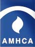
The mission of the American Mental Health Counsel is to enhance the profession of
mental health counseling through licensing, advocacy, education, and professional
development.
Read more about the... American
Mental Health Counsel
Fundraisers.com Features This Month's Causes
National Alzheimer's and Brain Awareness Month
 The Alzheimer's Association is the leading voluntary health organization in
Alzheimer's care, support, and research.
The Vision: A world without Alzheimer's and all other dementia.
The Mission: The Alzheimer's Association leads the way to end Alzheimer's and all
other dementia by accelerating global research, driving risk reduction and early
detection, and maximizing quality care and support.
As the largest nonprofit funder of Alzheimer's research, the Association is
committed to advancing vital research toward methods of treatment, prevention, and,
ultimately, a cure.
They work on a national and local level to provide care and support for all those
affected by Alzheimer's and other dementias.
They are the leading voice for Alzheimer's disease advocacy, fighting for critical
Alzheimer's research and care initiatives at the state and federal level.
The Alzheimer's Association is the leading voluntary health organization in
Alzheimer's care, support, and research.
The Vision: A world without Alzheimer's and all other dementia.
The Mission: The Alzheimer's Association leads the way to end Alzheimer's and all
other dementia by accelerating global research, driving risk reduction and early
detection, and maximizing quality care and support.
As the largest nonprofit funder of Alzheimer's research, the Association is
committed to advancing vital research toward methods of treatment, prevention, and,
ultimately, a cure.
They work on a national and local level to provide care and support for all those
affected by Alzheimer's and other dementias.
They are the leading voice for Alzheimer's disease advocacy, fighting for critical
Alzheimer's research and care initiatives at the state and federal level.
For more information, please visit >>> The Alzheimer's Association
National Cancer Survivors Day
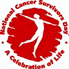 Plan now to participate in the 19th annual National Cancer Survivors Day on Sunday, June 4th, 2006. You will join thousands of people in hundreds of communities worldwide who will be celebrating the lives of all people, especially those who are living with a history of cancer.
Read more about the... National Cancer Survivors Day
National Men's Health Week
The purpose of Men's Health Week is to heighten the awareness of preventable health problems and encourage early detection and treatment of disease among men and boys. This week gives health care providers, public policy makers, the media, and individuals an opportunity to encourage men and boys to seek regular medical advice and early treatment for disease and injury.
Read more about the... Men's Health Week
HIV Testing Day
National HIV Testing Day (NHTD) was first observed on June 27, 2005. This day was established as an annual observance to promote HIV testing. This is a particularly important time for YOU to get involved! Take the Test, Take Control.
Read more about the... National HIV Test Day
National Headache Awareness Week
The National Headache Foundation is a non-profit organization dedicated to educating headache sufferers and healthcare professionals about headache causes and treatments.
Read more about the... National Headache Foundation
Helen Keller Deaf-Blind Awareness Week

For over 110 years, Helen Keller Services for the Blind (HKSB) has been a pioneer in the field of blindness rehabilitation. Their mission is to help individuals of all ages and degrees of blindness to live as independently as possible within their own communities. Headquartered in Brooklyn, the agency has two additional rehabilitation sites on Long Island.
Read more about the... Helen Keller Services for the Blind
Vision Research Month / Eye Safety Awareness Week / Fireworks Safety Month
Since 1908, Prevent Blindness America has been the nation's leading volunteer eye health and safety organization with the sole mission of preventing blindness and preserving sight.
Read more about... Prevent Blindness America
Myasthenia Gravis Awareness Month
The Myasthenia Gravis Foundation of America (MGFA) is the only national volunteer health agency dedicated solely to the fight against myasthenia gravis.
Read more about the... Myasthenia Gravis Foundation of America
National Aphasia Awareness Month
Aphasia (uh-fay'-zhuh) n. An impairment of the ability to use or comprehend words, usually acquired as a result of a stroke or other brain injury. The National Aphasia Association, NAA, is a nonprofit organization that promotes public education, research, rehabilitation and support services to assist people with aphasia and their families.
Read more about the... National Aphasia Association
Dystonia Awareness Week
 The mission of the Dystonia Medical Research Foundation is to
advance research for a cure; to promote awareness and education; and to support the
needs and well being of affected individuals and families.
The mission of the Dystonia Medical Research Foundation is to
advance research for a cure; to promote awareness and education; and to support the
needs and well being of affected individuals and families.
Read more about the... Dystonia Medical Research Foundation
National Scleroderma Awareness Month
The Scleroderma Foundation is the national organization for people with scleroderma and their families and friends. It was formed January 1,1998, by a merger between the West Coast-based United Scleroderma Foundation and the East Coast-based Scleroderma Federation.
Read more about the... Scleroderma Foundation
Fundraisers.com Features This Month's Causes
National Therapeutic Recreation Week
You're a park professional. An urban planner. A concerned citizen. Why is the National Recreation and Park Association important to you? Because parks and recreation is important to you. For more than 100 years, NRPA has been the voice advocating the significance of making parks, open space, and recreational opportunities available to all Americans.
Read more about the... National Recreation and Park Association
International Massage Week
Associated Bodywork and Massage Professionals (ABMP) is proud to sponsor International Massage Week. Since 1995, ABMP members have given their time, money and effort to help those less fortunate, while also promoting themselves and the profession.
Read more about... Associated Bodywork and Massage Professionals
Eye Injury Prevention Month and UV Safety Month
The American Academy of Ophthalmology is the largest national membership association of Eye M.D.s... ophthalmologists and medical doctors who provide comprehensive eye care, including medical, surgical and optical care. More than 90 percent of practicing U.S. Eye M.D.s are Academy members, and the Academy has more than 7,000 international members.
Read more about the... American Academy of Ophthalmology
Light the Night for Sight Nighttime Walks
.gif) Since 1908, Prevent Blindness America has been the nation's leading
volunteer eye health and safety organization with the sole mission of preventing
blindness and preserving sight.
Since 1908, Prevent Blindness America has been the nation's leading
volunteer eye health and safety organization with the sole mission of preventing
blindness and preserving sight.
Read more about... Prevent Blindness America
International Group B Strep Awareness Month
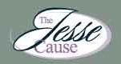 The Jesse Cause Foundation distributes brochures about GBS to pregnancy-related medical centers nationwide and worldwide, to promote GBS awareness. A woman with GBS can pass it on to her fetus when she is pregnant or to her baby during delivery or after birth. But, with testing, monitoring and treatment, 86% of GBS cases can be prevented.
Read more about the... Jesse Cause Foundation
Fundraisers.com Features This Month's Causes
National Minority Donor Awareness Day
The mission of the National Minority Organ and Tissue Transplant Education
Program, (MOTTEP) is to decrease the number and rate of ethnic minority
Americans needing organ and tissue transplants.
Read more about the...
National Minority Organ and
Tissue Transplant Education Program
National Night Out:
America's Night Out Against Crime
The National Association of Town Watch (NATW) is a on-profit
organization dedicated to the development and promotion of organized, law
enforcement-affiliated crime and drug prevention programs. Members include:
Neighborhood, Crime, Community, Town and Block Watch Groups; law enforcement
agencies; state and regional crime prevention associations; and a variety of
businesses, civic groups and concerned individuals working to make their communities
safer places in which to live and work.
Read more about the... National
Association of Town Watch
Cataract Awareness Month
Eye Injury Prevention Month
The American Academy of Ophthalmology is the largest national
membership association of Eye M.D.s. Eye M.D.s are ophthalmologists, medical doctors
who provide comprehensive eye care, including medical, surgical and optical care.
More than 90 percent of practicing U.S. Eye M.D.s are Academy members, and the
Academy has more than 7,000 international members.
Read more about the... American Academy
of Ophthalmology
Medic Alert Month
The MedicAlert Foundation is a non-profit healthcare informatics
organization dedicated to providing services worldwide to our members that protect
and save lives.
Read more about the... MedicAlert Foundation
Spinal Muscular Atrophy Awareness Month
Nighttime Walks
Families of Spinal Muscular Atrophy was founded in 1984 for the
purpose of raising funds to promote research to find a cure for Spinal Muscular
Atrophy, and to support families affected by SMA. FSMA is the largest private funder
of SMA research and is leading the way to find a cure.
Read more about... Families of Spinal Muscular Atrophy
Psoriasis Awareness Month
The National Psoriasis Foundation is a patient-driven nonprofit
organization that is the voice for the 5 million people affected by psoriasis and
psoriatic arthritis. Our mission is to improve lives through education, advocacy and
research.
Read more about the... National Psoriasis Foundation
Amblyopia Awareness Month
Since 1908, Prevent Blindness America has been the nation's leading
volunteer eye health and safety organization with the sole mission of preventing
blindness and preserving sight.
Read more about... Prevent
Blindness America
Fundraisers.com Features This Month's Causes
Prostate Cancer Awareness
 One in seven American men will be diagnosed with prostate cancer in his lifetime.
That's one in seven fathers, sons, husbands, brothers, partners, and friends. No one
wants the men in their lives to be faced with this disease. You can be part of
saving lives and keeping families together.
One in seven American men will be diagnosed with prostate cancer in his lifetime.
That's one in seven fathers, sons, husbands, brothers, partners, and friends. No one
wants the men in their lives to be faced with this disease. You can be part of
saving lives and keeping families together.
Childhood Cancer Awareness Month
Families, caregivers, charities and research groups across the United States observe September as Childhood Cancer Awareness Month. In the U.S., almost 13,000 children under the age of 21 are diagnosed with cancer every year; approximately 1/4 of them will not survive the disease. A diagnosis turns the lives of the entire family upside down. The objective of Childhood Cancer Awareness Month is to put a spotlight on the types of cancer that largely affect children, survivorship issues, and - importantly - to help raise funds for research and family support.
Read more about... American Childhood Cancer Foundation
Leukemia and Lymphoma Awareness Month
The Leukemia and Lymphoma Society is the world's largest voluntary health organization dedicated to funding blood cancer research, education and patient services. The Society's mission: Cure leukemia, lymphoma, Hodgkin's disease and myeloma, and improve the quality of life of patients and their families. Since its founding in 1949, the Society has invested more than $424 million for research specifically targeting blood cancers.
Read more about... Leukemia and Lymphoma Society
Safe Kids Worldwide
Safe Kids Worldwide is the first and only international nonprofit organization dedicated solely to preventing unintentional childhood injury.
Read more about... Safe Kids Worldwide
STOP a Suicide Today Day
Each year in America almost 30,000 people commit suicide, and 70% of those people tell someone or give warning signs before taking their own life. Stop A Suicide, Today! can teach you how to recognize the warning signs of suicide in family, friends, co-workers, and patients, and why you need to respond as you would do with any medical emergency.
Read more about... Stop A Suicide, Today!
Children's Eye Health and Safety Month
Since 1908, Prevent Blindness America has been the nation's leading volunteer eye health and safety organization with the sole mission of preventing blindness and preserving sight.
Read more about... Prevent Blindness America
Baby Safety Month
The Juvenile Products Manufacturers Association exists to advance the interests, growth and well-being of the juvenile products industry through advocacy, public relations, information sharing and business development opportunities.
Read more about the... Juvenile Products Manufacturers Association
National Alcohol and Drug Addiction Recovery Month
The Recovery Month effort aims to promote the societal benefits of alcohol and drug use disorder treatment, laud the contributions of treatment providers and promote the message that recovery from alcohol and drug use disorders in all its forms is possible.
Read more about... National Alcohol and Drug Addiction Recovery Month
Suicide Prevention Week
The goal of the American Association of Suicidology (AAS) is to understand and prevent suicide. Founded in 1968 by Edwin S. Shneidman, Ph.D., AAS promotes research, public awareness programs, public education, and training for professionals and volunteers. In addition, AAS serves as a national clearinghouse for information on suicide.
Read more about... American Association of Suicidology
National Suicide Awareness Week
In any given year in the Unites States, approximately 30,000 individuals die by their own hands and thousands more attempt suicide. To combat this, the Substance Abuse and Mental Health Services Administration (SAMHSA) Center for Mental Health Services, is launching the National Suicide Prevention Initiative (NSPI). NSPI is a collaborative, multi project initiative designed to incorporate best practices and research toward reducing the incidence of suicide nationwide.
Read more about... Substance Abuse and Mental Health Services Administration
National Child Passenger Safety Awareness Week
The National Highway Traffic Safety Administration is dedicated to achieving the highest standards of excellence in motor vehicle and highway safety. The agency strives to exceed the expectations of its customers through its core values of Integrity, Service and Leadership.
Fundraisers.com Features This Month's Causes
Join The Fight Against Breast Cancer
.gif) Breast Cancer Research
Foundation
The goal of the Breast Cancer Research Foundation is to achieve prevention and a
cure for breast cancer in our lifetime by providing critical funding for innovative
clinical and genetic research at leading medical centers worldwide, and increasing
public awareness about good breast health. A minimum of 85 cents of every dollar
goes to research and awareness programs.
Breast Cancer Research
Foundation
The goal of the Breast Cancer Research Foundation is to achieve prevention and a
cure for breast cancer in our lifetime by providing critical funding for innovative
clinical and genetic research at leading medical centers worldwide, and increasing
public awareness about good breast health. A minimum of 85 cents of every dollar
goes to research and awareness programs.
 Susan G. Komen for the
Cureis the global leader of the breast cancer movement, having
invested more than $1 billion since inception in 1982. As the world's largest
grassroots network of breast cancer survivors and activists, they are working
together to save lives, empower people, ensure quality care for all and energize
science to find the cures.
Susan G. Komen for the
Cureis the global leader of the breast cancer movement, having
invested more than $1 billion since inception in 1982. As the world's largest
grassroots network of breast cancer survivors and activists, they are working
together to save lives, empower people, ensure quality care for all and energize
science to find the cures.
National
Cancer Institute, Breast Cancer is the most common non-skin
cancer, and the second leading cause of cancer-related death in women. Although the
breast cancer diagnosis rate has increased, there has been a steady drop in the
overall breast cancer death rates since the early 1990s. Currently, $570 million
dollars a year is spent on breast cancer research.
Domestic Violence Awareness Month
 What Mariska Hargitay Said She Discovered
One in three women report being physically or sexually abused by a husband or
boyfriend at some point in their lives.
What Mariska Hargitay Said She Discovered
One in three women report being physically or sexually abused by a husband or
boyfriend at some point in their lives.
Every two minutes in the United States, someone is sexually assaulted.
More than five children die every day in this country as a result of child abuse and
neglect, and up to 15 million children witness domestic violence in their homes each
year.
But what really opened her eyes and subsequently, her heart, was the fan mail she
received. The letters didn't say, "I love your show. Can you send me an autographed
picture?" They said, "I was raped when I was fifteen. I'm forty now and I've never
told anyone." Survivors were disclosing their stories to her, many for the first
time.
The fact that these individuals were revealing something so personal to someone they
knew only as a character on television demonstrated to Mariska, and to all of us,
how desperate they were to be heard, believed, supported and healed.
Her response was to create Joyful
Heart.
Inspired by her deep connection and love for Hawaii, where she first experienced her
own heart awakening, Mariska founded Joyful Heart
in Kona in 2004, with the intention of helping sexual assault survivors heal and
reclaim a sense of joy in their lives.
Now you can help too! Get
Involved
TOGETHER WE CAN END DOMESTIC VIOLENCE & SEXUAL ASSAULT
What is NO MORE?
NO MORE is a new unifying symbol designed to galvanize greater awareness and action to end domestic violence and sexual assault. Supported by major organizations working to address these urgent issues, NO MORE is gaining support with Americans nationwide, sparking new conversations about these problems and moving this cause higher on the public agenda.
Who is behind NO MORE? Find Out HERE
.gif) "Bearing Witness to Violence Against Women for over two decades"
"Bearing Witness to Violence Against Women for over two decades" The Clothesline Project honors women survivors as well as victims of intimate violence. Any woman who has experienced such violence, at any time in her life, is encouraged to come forward and design a shirt. Victim's families and friends are also invited to participate.
Editors Note: While working with a shelter in Glendale, CA during the 1990s, the Clothesline Project was out in front of the YWCA and what an impact it had on people reading the messages on the shirts.
Read about the History and how you can impact your neighborhood and help raise awareness with the Clothesline Project.
National Down Syndrome Awareness Month
.gif) The National Down Syndrome Society envisions a world in which all
people with Down syndrome have the opportunity to realize their life aspirations.
NDSS is committed to being the national leader in enhancing the quality of life, and
realizing the potential of all people with Down syndrome. The mission of the
National Down Syndrome Society is to benefit people with Down syndrome and their
families through national leadership in education, research and advocacy.
The National Down Syndrome Society envisions a world in which all
people with Down syndrome have the opportunity to realize their life aspirations.
NDSS is committed to being the national leader in enhancing the quality of life, and
realizing the potential of all people with Down syndrome. The mission of the
National Down Syndrome Society is to benefit people with Down syndrome and their
families through national leadership in education, research and advocacy.
Read more about the... National Down
Syndrome Society
SAVE Today
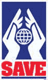 The SAVE (Stop America's Violence Everywhere) program was launched by the AMA Alliance in 1995 to Stop America's Violence Everywhere. As part of SAVE, state and county Alliances provide schoolchildren, battered women and their families, and homeless families with financial and emotional support and simple, effective lessons in conflict resolution. Included under the SAVE umbrella are two paths of action: SAVE-A-Shelter and SAVE Schools from Violence.
Read more about the... AMA Alliance
World Food Day
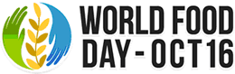 World Food Day is a day of action against hunger. People around the world come together to declare their commitment to create a world free from hunger and malnutrition. Because when it comes to hunger, the only acceptable number is zero.
Read more about the... World Food Day
National Red Ribbon Week
 The Red Ribbon Campaign was started when drug traffickers in Mexico City murdered
Kiki Camarena, a DEA agent, in 1985. This began the continuing tradition of wearing
and displaying red ribbons as a symbol of intolerance towards the use of drugs. The
purpose of the Red Ribbon Campaign is to present a unified and visible commitment
toward the creation of a DRUG-FREE AMERICA.
The Red Ribbon Campaign was started when drug traffickers in Mexico City murdered
Kiki Camarena, a DEA agent, in 1985. This began the continuing tradition of wearing
and displaying red ribbons as a symbol of intolerance towards the use of drugs. The
purpose of the Red Ribbon Campaign is to present a unified and visible commitment
toward the creation of a DRUG-FREE AMERICA.
Find out more about Red Ribbon Week
Students Against Destructive Decisions
SADD is a peer-to-peer education, prevention, and activism organization dedicated to preventing destructive decisions, particularly underage drinking, other drug use, risky and impaired driving, teen violence, and teen suicide.
See how you can help SADD
Click For More October Awareness Listings
Fundraisers.com Features This Month's Causes
Pancreatic Cancer Awareness Month
 Today marks the beginning of National Pancreatic Cancer Awareness Month - a time to
educate the public about pancreatic cancer, a little-known disease, which kills one
person every 17 minutes in the U.S. Pancreatic cancer, the fourth leading cause of
cancer death in the United States, has a 99 percent mortality rate the highest
fatality rate of all cancers; yet it receives the least amount of federal funding of
any cancer for research to find effective treatments.
Today marks the beginning of National Pancreatic Cancer Awareness Month - a time to
educate the public about pancreatic cancer, a little-known disease, which kills one
person every 17 minutes in the U.S. Pancreatic cancer, the fourth leading cause of
cancer death in the United States, has a 99 percent mortality rate the highest
fatality rate of all cancers; yet it receives the least amount of federal funding of
any cancer for research to find effective treatments.
For more information, please visit >>> The Pancreatic Cancer Action Network
American Diabetes Awareness Month
Diabetes is a disease in which the body does not produce or properly use insulin. Insulin is a hormone that is needed to convert sugar, starches and other food into energy needed for daily life. The cause of diabetes continues to be a mystery, although both genetics and environmental factors such as obesity and lack of exercise appear to play roles.
There are 20.8 million people in the United States, or 7% of the population, who have diabetes. While an estimated 14.6 million have been diagnosed with diabetes, unfortunately, 6.2 million people (or nearly one-third) are unaware that they have the disease.
For more info, please visit >>> The American Diabetes Association
Veteran's Awareness Month
The National Veterans Awareness Week resolution was written to help encourage, develop, and disseminate educational materials and activities. Students in elementary and secondary school learn about the contributions of veterans and their importance in preserving American peace and prosperity.
For more information, please visit >>> Veteran's Awareness Month
Lung Cancer Awareness Month
 Lung Cancer Awareness Month (LCAM) is a national campaign dedicated to increasing
attention to lung cancer issues. By organizing rallies, distributing educational
material, holding fund-raising events, contacting Congress, and speaking to the
media, those involved in LCAM bring much-needed support and attention to a disease
that each year kills more people than breast, prostate, colon and pancreas cancers
combined.
Lung Cancer Awareness Month (LCAM) is a national campaign dedicated to increasing
attention to lung cancer issues. By organizing rallies, distributing educational
material, holding fund-raising events, contacting Congress, and speaking to the
media, those involved in LCAM bring much-needed support and attention to a disease
that each year kills more people than breast, prostate, colon and pancreas cancers
combined.
For more information, please visit >>> The Lung Cancer Alliance
Great American Smokeout
Every year, smokers across the nation take part in the American Cancer Society's
Great American Smokeout by smoking less or quitting for the day on the third
Thursday of November. The event challenges people to stop using tobacco and raises
awareness of the many effective ways to quit for good.
For more information, please visit the >>> American Cancer Society
America Education Day
 Help celebrate American Education Week (AEW). This year's theme, Great Public
Schools: A Basic Right and Our Responsibility, highlights the importance of bringing
together educators, school staff, parents, students, and communities in a unified
effort to build great public schools. The theme also reflects NEA's vision of
calling upon America to provide students with quality public schools so that they
can grow, prosper, and achieve in the 21st century.
Help celebrate American Education Week (AEW). This year's theme, Great Public
Schools: A Basic Right and Our Responsibility, highlights the importance of bringing
together educators, school staff, parents, students, and communities in a unified
effort to build great public schools. The theme also reflects NEA's vision of
calling upon America to provide students with quality public schools so that they
can grow, prosper, and achieve in the 21st century.
For more information, please visit >>> America Education Day
Prematurity Awareness Month
 Every day 1 in 8 babies born in the U.S. arrives too soon. Premature birth can
happen to any pregnant woman, and no one knows why. It is a serious, common and
costly problem. The March of Dimes is leading the campaign to reduce premature
births by supporting research and by educating the public and health care providers.
Every day 1 in 8 babies born in the U.S. arrives too soon. Premature birth can
happen to any pregnant woman, and no one knows why. It is a serious, common and
costly problem. The March of Dimes is leading the campaign to reduce premature
births by supporting research and by educating the public and health care providers.
For more information, please visit the >>> March of Dimes
National Adoption Awareness Month
 Each year, November is recognized as National Adoption Awareness Month. While all
adoption-related issues are important, the particular focus of this month is the
adoption of children currently in foster care.
Each year, November is recognized as National Adoption Awareness Month. While all
adoption-related issues are important, the particular focus of this month is the
adoption of children currently in foster care.
For more information, please visit >>> Adoption.com
National Council For Adoption
 NCFA has been a champion of adoption since its founding in 1980. Whether as an
advocate for state laws that promote sound adoption policy, a resource for federal
officials and policymakers about appropriate federal adoption initiatives and
reform, a diplomat for sound international adoption policy, or a source of adoption
facts and education, NCFA is devoted to serving the best interests of children
through adoption. Learn more about the ways in which NCFA works to promote the
positive option of adoption.
NCFA has been a champion of adoption since its founding in 1980. Whether as an
advocate for state laws that promote sound adoption policy, a resource for federal
officials and policymakers about appropriate federal adoption initiatives and
reform, a diplomat for sound international adoption policy, or a source of adoption
facts and education, NCFA is devoted to serving the best interests of children
through adoption. Learn more about the ways in which NCFA works to promote the
positive option of adoption.
For more information, please visit >>> National Council For Adoption
Child Welfare Adoption Clearinghouse

Resources on all aspects of domestic and intercountry adoption, including adoption from foster care. Includes information for prospective and adoptive parents; information about searching for birth relatives; and resources for professionals on recruiting adoptive families, preparing children and youth, supporting birth parents, and providing postadoption services.
For more information, please visit >>> Child Welfare Information Clearinghouse
National Family Caregivers Month
 The National Family Caregivers Association (NFCA) supports, empowers, educates, and
speaks up for the more than 50 million Americans who care for a chronically ill,
aged, or disabled loved one. NFCA reaches across the boundaries of different
diagnoses, different relationships, and different life stages to address the common
needs and concerns of all family caregivers. They are committed to improving the
overall quality of life of caregiving families and minimizing the disparities
between family caregivers and non-caregivers.
The National Family Caregivers Association (NFCA) supports, empowers, educates, and
speaks up for the more than 50 million Americans who care for a chronically ill,
aged, or disabled loved one. NFCA reaches across the boundaries of different
diagnoses, different relationships, and different life stages to address the common
needs and concerns of all family caregivers. They are committed to improving the
overall quality of life of caregiving families and minimizing the disparities
between family caregivers and non-caregivers.
For more information, please visit >>> The National Family Caregivers Association
United States Marine Corps Day
 You can help the Marine Corps friends and family by supporting them while they
support one another through boot camp and deployment.
You can help the Marine Corps friends and family by supporting them while they
support one another through boot camp and deployment.
For more information, please visit >>> Marine Corps Parents
America Recycles Day
 With the involvement and enthusiasm of people like you, recycling is back! And so
are thousands upon thousands of recycled products made from materials that would
otherwise be piling up in our nation's landfills. It doesn't just make sense. It
makes a huge difference to our environment, our quality of life and our country's
future.
With the involvement and enthusiasm of people like you, recycling is back! And so
are thousands upon thousands of recycled products made from materials that would
otherwise be piling up in our nation's landfills. It doesn't just make sense. It
makes a huge difference to our environment, our quality of life and our country's
future.
For more information, please visit >>> National Recycling Coalition
Fundraisers.com Features This Month's Causes
World Aids Day
 December 1st
December 1st
Around forty million people are living with HIV throughout the world - and that
number increases in every region every day. World AIDS Day, December 1st is an
opportunity for people worldwide to unite in the fight against HIV and AIDS.
Read more... World AIDS
Day
World Health Organization
As the directing and coordinating authority on international health, the World
Health Organization (WHO) takes the lead within the UN system in the global health
sector response to HIV/AIDS. The HIV/AIDS Department provides evidence-based,
technical support to WHO Member States to help them scale up treatment, care, and
prevention services with a broad health sector approach and ensure a comprehensive
and sustainable response to HIV/AIDS.
Read more... The World Health
Organization
UNAIDS
The Joint United Nations Program on HIV/AIDS, UNAIDS, is the main advocate for
accelerated, comprehensive and coordinated global action on the epidemic. UNAIDS'
mission is to lead, strengthen and support an expanded response to HIV and AIDS that
includes preventing transmission of HIV, providing care and support to those already
living with the virus, reducing the vulnerability of individuals and communities to
HIV and alleviating the impact of the epidemic.
Read more... UNAIDS
Elton John AIDS Foundation
The Elton John AIDS Foundation encompasses a broad spectrum of services supporting
men, women, young adults, children, infants, minorities and entire families living
with or at risk for HIV/AIDS. Grants support programs and services ranging from
education outreach programs, harm reduction models, early testing and treatment
advocacy, legal aid, buddy programs, food banks, meal delivery programs, hospice
care and adoption services for children orphaned and/or living with HIV.
Read more... Elton John AIDS
Foundation
International Safe Toys and Gifts Month
Safe Kids Worldwide is a global network of organizations whose mission is to prevent
accidental childhood injury, a leading killer of children 14 and under. Safe Kids
Worldwide was founded in 1987 as the National SAFE KIDS Campaign by Children's
National Medical Center with support from Johnson & Johnson. Safe Kids Worldwide is
a 501(c)(3) non-profit organization located in Washington, D.C.
Read more... International Safe
Toys and Gifts Month
Young Children's Safe Toys & Gifts Awareness Month
Young children are often described as "accidents waiting to happen". Too often,
accidents do occur and may result in eye injuries. In 2003, thousands of children
age 14 and younger suffered serious eye injuries, even blindness, from toys.
Read more... Prevent
Blindness America
International Volunteer Day
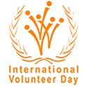
The International Volunteer Day (IVD) provides an opportunity for
volunteer-involving organizations and individual volunteers to work together on
projects and campaigns promoting their contributions to economic and social
development at local, national, and international levels. IVD was established by the
United Nations General Assembly through Resolution 40/212 on December 17th,
1985.
Read more about the... International Volunteer Day
United Nations International Day of Disabled Persons
The annual observance of the International Day of Disabled Persons, aims to promote
an understanding of disability issues and mobilize support for the dignity, rights
and well-being of persons with disabilities. The theme of the Day is based on the
goal of full and equal enjoyment of human rights and participation in society by
persons with disabilities, established by the World Programme of Action concerning
Disabled Persons, adopted by the General Assembly in 1982.
Read more about the... United Nations International Day of Disabled Persons
Human Rights Day
Human Rights Day is observed by the international community every year on 10
December. It commemorates the day in 1948 the United Nations General Assembly
adopted the Universal Declaration of Human Rights. Its formal inception dates from
1950, after the Assembly passed resolution 423 (V) inviting all States and
interested organizations to adopt 10 December of each year as Human Rights Day.
Read more about the... Human Rights Day
United Nations International Migrants Day
This is a day when the international community recognizes the rights of migrants
around the world. The UN General Assembly approved the International Convention on
the Protection of the Rights of All Migrant Workers and Members of Their Families on
December 18, 1990, and the day was officially designated International Migrants Day
by the United Nations in 2000.
Read more about the... United Nations International Migrants Day

National Aplastic Anemia Week
The Aplastic Anemia & MDS International Foundation is the oldest and largest patient
advocate and support organization for bone marrow diseases, providing life-saving
hope, knowledge, and support to hundreds of thousands of patients and their families
around the world.
Read more about... National
Aplastic Anemia Week
National Drunk and Drugged Driving Prevention Month
NHTSA's primary message during the December holiday season is Friends Don't Let
Friends Drive Drunk--Designate a Sober Driver. But they also know that some States
and communities will be increasing enforcement of impaired driving laws through
sobriety checkpoints or saturation patrols, so they've provided multimedia tools to
support the You Drink & Drive. You Lose. message.
Read more... National Drunk and Drugged Driving Prevention Month
Elizabeth Glaser Pediatrics Aids Foundation
The Elizabeth Glaser Pediatrics Aids Foundation creates a future of hope for
children and families worldwide by eradicating pediatric AIDS, providing care and
treatment to people with HIV/AIDS, and accelerating the discovery of new treatments
for other serious and life-threatening pediatric illnesses.
Read more... The Pediatric AIDS
Foundation
Identity Theft Prevention and Awareness Month
This website is a one-stop national resource to learn about the crime of identity
theft. It provides detailed information to help you Deter, Detect, and Defend
against identity theft. While there are no guarantees about avoiding identity theft,
there are steps you can take to minimize your risk and minimize the damage if a
problem occurs.
Read more... Identity Theft Prevention and Awareness Month
Featured Idea:
Victory Scratch Cards... Scratch Your Way To Success! 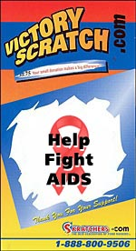
CLICK HERE For Information On Victory Scratch Cards!
Victory Scratch Cards are an innovative new way to collect donations. They can be used alone, or in tandem with other fundraising projects, like 10k runs and bike-a-thons, to raise even more money for your cause. The cards can be customized with your group name and logo, and each card features inspirational messages. Try them now and get FREE Shipping and 30 day financing!
Fundraisers.com Features This Month's Causes
AMD/Low Vision Awareness Month
Age-related macular degeneration (AMD) is the leading cause of visual impairment in individuals age 50 and older. It is important to inform everyone about AMD and the low vision resources available that can help those affected by this disease maintain independence and preserve their quality of life.
Read more about the... American Academy of Ophthalmology
National Condom Day
The American Social Health Association The American Social Health Association is recognized by the public, patients, providers, and policymakers for developing and delivering accurate, medically reliable information about STDs. Public and college health clinics across the US order ASHA educational pamphlets and books to give to clients and students Community-based organizations depend on ASHA, too, to help communicate about risk, transmission, prevention, testing and treatment.
ASHA is a trusted, non-governmental resource that has advocated on behalf of patients to help improve public health outcomes since 1914. You can be assured that the information you find on this Web site is based upon well-researched and documented medical facts and follows approved treatment guidelines as recommended by the Centers for Disease Control and Prevention.
Read more about the... American Social Health Association
National Organ Donor Day
Over 90,000 people are waiting for the gift of life... Each day, about 74 people receive an organ transplant. However, 17 people die each day waiting for transplants that can't take place because of the shortage of donated organs. The official U.S. Government web site for organ and tissue donation and transplantation, www.organdonor.gov, is maintained by the Health Resources and Services Administration (HRSA), Healthcare Systems Bureau (HSB), Division of Transplantation, an agency of the U.S. Department of Health and Human. The Division also administers grant programs and conducts public and professional education initiatives to increase awareness of the critical need for organ and tissue donors.
Read more about... Organ Donation
National Eating Disorders Awareness Week
The National Eating Disorders Association The National Eating Disorders Association (NEDA) is dedicated to expanding public understanding of eating disorders and promoting access to quality treatment for those affected along with support for their families through education, advocacy, and research
NEDA presented Paula Abdul with its highest honor, the "Profiles in Living Award. Abdul stated, "I have received awards, but nothing like this. This is the true achievement in my life because I wouldn't have a life if I didn't get through this." Abdul, a celebrity judge on television's top-rated American Idol and an award-winning singer, dancer, choreographer and designer, is an Ambassador for NEDA and was an early outspoken celebrity to share her own battle with an eating disorder.
Read more about the... National Eating Disorders Association
Kids E.N.T. (Ears, Nose, Throat) Month
The number one reason that a child visits a physician is for an ear infection. One of the most common chronic illnesses affecting teenagers is tonsillitis. If one parent has allergies, the chance that the child will have allergic disease is 48 percent, 70 percent if both parents do.
Otolaryngologist- head and neck surgeons are specialists trained to provide your child the most effective treatment for disorders of the ear, nose, and throat. Kids E.N.T. Health provides parents, caregivers, and health providers the latest information on diagnosis and treatment of children's ear, nose, and throat problems.
The number one reason that a child visits a physician is for an ear infection...Read more at the... Kids E.N.T. (Ears, Nose, Throat) Month
National Children's Dental Health Month
The American Dental Association (ADA) was established in 1859. Today, we have more than 152,000 members. As the world's largest and oldest national dental association, they are the oral health authority committed to both the public and the dental profession.
The American Dental Association held the first national observance of Children's Dental Health Day on February 8, 1949. This single day observance became a weeklong event in 1955. In 1981, the program was extended to a month-long celebration known today as National Children's Dental Health Month.
Read more about the... American Dental Association
Wise Health Consumer Month
10 TIPS TO BE A HEALTH WISE CONSUMER
A wise health consumer is a physically and emotionally healthy consumer, and February is Wise Health Consumer Month. The American Institute of Preventive Medicine, like the Center for Mental Health Services, develops and implements programs designed to prevent ill health and reduce health care costs. Programs that focus on self-care, smoking cessation, weight control, stress management, to name a few, are designed with the wise health consumer in mind. These show the consumer how to make healthy lifestyle choices and live a long, healthy and productive life.
Check out the... 10 Tips for being a Health Wise Consumer
Back To The First Page Of February Awareness Listings
Fundraisers.com Features This Month's Causes
National Nutrition Month
With nearly 65,000 members, the American Dietetic Association is the nation's largest organization of food and nutrition professionals. ADA serves the public by promoting optimal nutrition, health and well-being. ADA members are the nation's food and nutrition experts, translating the science of nutrition into practical solutions for healthy living.
Read more about the... American Dietetic Association
Brain Awareness Week
Brain Awareness Week is an international effort organized by the Dana Alliance for Brain Initiatives to advance public awareness about the progress and benefits of brain research. The Dana Alliance is joined in the campaign by partners in the United States and around the world, including medical and research organizations; patient advocacy groups; the National Institutes of Health, and other government agencies; service groups; hospitals and universities; K-12 schools; and professional organizations.
Read more about the... Dana Alliance
Problem Gambling Awareness Week
The Mission of the National Council on Problem Gambling is to increase public awareness of pathological gambling, ensure the widespread availability of treatment for problem gamblers and their families, and to encourage research and programs for prevention and education.
Read more about the... National Council on Problem Gambling
National School Breakfast Week
 The School
Nutrition Association (formerly American School Food Service
Association) is a national, nonprofit professional organization representing more
than 55,000 members who provide high-quality, low-cost meals to students across the
country. Recognized as the authority on school nutrition, the School Nutrition
Association (SNA) has been advancing the availability, quality, and acceptance of
school nutrition programs as an integral part of education since 1946.
The School
Nutrition Association (formerly American School Food Service
Association) is a national, nonprofit professional organization representing more
than 55,000 members who provide high-quality, low-cost meals to students across the
country. Recognized as the authority on school nutrition, the School Nutrition
Association (SNA) has been advancing the availability, quality, and acceptance of
school nutrition programs as an integral part of education since 1946.
The Association works to ensure all children have access to healthful school meals and nutrition education by:
- Providing members with education and training
- Setting standards through certification and credentialing
- Gathering and transmitting regulatory, legislative, industry, nutritional and other types of information related to school nutrition
- Representing the nutritional interests of all children
Read more about the... School Nutrition Association
National Inhalants and Poisons Awareness Week
Synergies, a non-profit corporation based in Austin, Texas, founded the National Inhalant Prevention Coalition (NIPC) in 1992. The NIPC grew from a statewide prevention project in Texas called the Texas Prevention Partnership, which began in 1990. NIPC is a public-private effort to promote awareness and recognition of the under publicized problem of inhalant use. The NIPC is led by Synergies, a non-profit corporation, located in Chattanooga, Tennessee.
The NIPC serves as an inhalant referral and information clearinghouse, stimulates media coverage about inhalant issues, develops informational materials, produces ViewPoint (a quarterly newsletter), provides training and technical assistance and leads a week-long national grassroots inhalant education and awareness campaign.
Read more about the... National Inhalant Prevention Coalition
Pulmonary Rehabilitation Week
The mission statement of the American Association of Cardiovascular and Pulmonary Rehabilitation is: To reduce morbidity, mortality, and disability from cardiovascular and pulmonary diseases through education, prevention, rehabilitation, research, and aggressive disease management.
Read more about the... American Association of Cardiovascular and Pulmonary Rehabilitation
World TB (Tuberculosis) Day
The Stop TB Partnership was established in 2000 to realize the goal of eliminating TB as a public health problem and, ultimately, to obtain a world free of TB. It comprises a network of international organizations, countries, donors from the public and private sectors, governmental and nongovernmental organizations and individuals that have expressed an interest in working together to achieve this goal.
Read more about the... Stop TB Partnership
Doctor's Day
National Doctors' Day provides a time for people to show appreciation to the doctors who care for them or their loved ones. Both patients and those who work for or with physicians may recognize, thank or show appreciation by giving cards, notes, commemorative tokens of remembrance, etc.
Patients who have long-term relationships with their doctors, for example a woman during pregnancy, someone with a long-term or terminal illness, families who rely on their family doctor, or anyone who wants to thank a physician for the care he or she has provided- take the opportunity to single out a special doctor, psychologist, dentist, chiropractor, nurse practitioner, or other health-care professional.
Let your Doctors know that you appreciate them. Send them a card.
Kick Butts Day
The Kick Butts Day Campaign provides in-kind assistance to state coalitions working on tobacco control and prevention issues through technical assistance and strategic advice. This includes background data and research to underpin the case for tobacco prevention and communication strategy assistance.
Read more about... Kick Butts Day
National Sleep Awareness Week
The National Sleep Foundation (NSF) is an independent nonprofit organization dedicated to improving public health and safety by achieving an understanding of sleep and sleep disorders, and by supporting education, research, and advocacy. Established in 1990, NSF relies on voluntary contributions including grants from foundations, corporations, government agencies and other organizations to support our programs.
Read more about the... National Sleep Foundation
International Children's Day of Broadcasting
The International Children's Day of Broadcasting is a joint initiative between UNICEF and the International Academy of Television Arts & Sciences aims to make children part of the programming process. Every December, broadcasters in more than 100 countries celebrate the day in unique ways, as children go on the air as reporters, presenters, and producers.
Read more about the... International Children's Day of Broadcasting
Fundraisers.com Features This Month's Causes
Women's Eye Health Safety Month
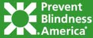 Since 1908, Prevent Blindness America has been the nation's leading volunteer eye health and safety organization with the sole mission of preventing blindness and preserving sight. Women often manage family health concerns. Do you know how to protect your sight? Hormonal changes, age and smoking can endanger sight.
Read more about... Prevent Blindness America
Foot Health Awareness Month
The American Podiatric Medical Association is the premier professional organization representing the nation's Doctors of Podiatric Medicine (podiatrists). The APMA represents approximately 80 percent of the podiatrists in the country. Within APMA's umbrella of organizations are 53 component societies in states and other jurisdictions, as well as 21 affiliated and related societies.
Read more about... American Podiatric Medical Association
Sports Eye Safety Month
The American Academy of Ophthalmology is the largest national membership association of Eye M.D.s. Eye M.D.s are ophthalmologists, medical doctors who provide comprehensive eye care, including medical, surgical and optical care. More than 90 percent of practicing U.S. Eye M.D.s are Academy members, and the Academy has more than 7,000 international members. Each year, more than 40,000 athletes suffer from an eye injury. Use this month's tools to spread the message to your community, patients and the media that 90 percent of these injuries could have been prevented with protective eyewear.
Read more about... American Academy of Ophthalmology
National Public Health Week
Celebrating 10 Years of Recognizing National Public Health Week In 1995, former President William Jefferson Clinton proclaimed the first full week of April as National Public Health Week. Each year since then the public health community has focused on issues that are important to improving the public's health.
Read more about... National Public Health Week
National Alcohol Screening Day
NASD is funded by the National Institute on Alcohol Abuse and Alcoholism (NIAAA) and the Substance Abuse and Mental Health Services Administration (SAMHSA) of the U.S. Department of Health and Human Services and the Department of Transportation, National Highway Traffic Safety Administration.
Read more about... National Alcohol Screening Day
National Health Information Privacy And Security Week
National Health Information Privacy and Security Week, sponsored by the American Health Information Management Association (AHIMA), is designed to raise awareness among healthcare professionals, their employers, and the public of the importance of protecting the privacy, confidentiality, and security of personal health information.
Read more about... American Health Information Management Association
National Cancer Awareness Week
Since the passage of the National Cancer Act over 30 years ago, our nation has made great progress in reducing the burden of cancer. While we have much more to learn about this complex disease, our increased understanding of cancer at the genetic, molecular, and cellular levels is opening up enormous opportunity to interrupt the initiation and progression of the disease.
Read more about... National Cancer Institute
Click To Return To The First April Awareness Page
Fundraisers.com Features This Month's Causes
Cold and Flu Campaign
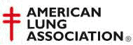 The American Lung Association is the oldest voluntary health organization in the United States, with a National Office and constituent and affiliate associations around the country. Founded in 1904 to fight tuberculosis, the American Lung Association today fights lung disease in all its forms, with special emphasis on asthma, tobacco control and environmental health.
Read more about the... American Lung AssociationGynecologic Cancer Awareness Month
The Society of Gynecologic Oncology's (SGO) Foundation for Women's Cancer is dedicated to increasing public awareness of gynecologic cancer risk awareness, prevention, early detection and optimal treatment. Founded by SGO in 1991, the Foundation for Women's Cancer is a nonprofit organization that also provides funding for gynecologic cancer research and training, as well as educational programs and resources.
Read more about the... Foundation for Women's CancerAlcohol Awareness Month
Founded in 1944 by Marty Mann, the first woman to find long-term sobriety in Alcoholics Anonymous, the National Council on Alcoholism and Drug Dependence, Inc. (NCADD) provides education, information, help and hope to the public. It advocates prevention, intervention and treatment through offices in New York and Washington, and a nationwide network of Affiliates.
Read more about the... National Council on Alcoholism and Drug DependenceNational Cholesterol Education Month
Learn what steps you can take to prevent high cholesterol or to reduce your LDL "bad" cholesterol level. Too much cholesterol in the blood is one of the main risk factors for heart disease and stroke-two leading causes of death in the United States. One way to prevent these diseases is to detect high cholesterol and treat it when it is found.
Read more about the... National Cholesterol Education MonthNational Food Safety Education Month
This year's theme for National Food Safety Month is "Notorious Virus"! Explore how to protect your guests from some of the leading causes of foodborne illness - Norovirus and Hepatitis A!
Read more about the... National Food Safety MonthNational Home and Sports Eye Safety Month
Since 1908, Prevent Blindness America has been the nation's leading volunteer eye
health and safety organization with the sole mission of preventing blindness and
preserving sight. Read more on Prevent Blindness America.
National Menopause Awareness Month
MAM's goal is quite simple: educate people about menopause, and shine light on innovations in menopausal science and technology.
Read more about... National Menopause Awareness MonthNational Osteopathic Medicine Month
The American Osteopathic Association is a member association representing more than 56,000 osteopathic physicians (D.O.s). The AOA serves as the primary certifying body for D.O.s, and is the accrediting agency for all osteopathic medical colleges and health care facilities. The AOA's mission is to advance the philosophy and practice of osteopathic medicine by promoting excellence in education, research, and the delivery of quality, cost-effective healthcare within a distinct, unified profession.
Read more about the... American Osteopathic AssociationNational Pediculosis Prevention Month/Head Lice Prevention Month
The National Pediculosis Association, Inc. (NPA) is the only non-profit health and education agency dedicated to protecting children from the misuse and abuse of potentially harmful lice and scabies pesticidal treatments. As part of its mission, the NPA works to encourage our nation's health and child care professionals to adopt standardized head lice management programs in an effort to keep the children in school lice and nit free.
Read more about... National Pediculosis AssociationBack To Previous September Awareness Listings
Fundraisers.com Features This Month's Causes
Join The Fight Against Breast Cancer
 The goal of the Breast
Cancer Research Foundation is to achieve prevention and a cure
for breast cancer in our lifetime by providing critical funding for innovative
clinical and genetic research at leading medical centers worldwide, and increasing
public awareness about good breast health. A minimum of 85 cents of every dollar
goes to research and awareness programs.
The goal of the Breast
Cancer Research Foundation is to achieve prevention and a cure
for breast cancer in our lifetime by providing critical funding for innovative
clinical and genetic research at leading medical centers worldwide, and increasing
public awareness about good breast health. A minimum of 85 cents of every dollar
goes to research and awareness programs.
Susan G. Komen for the Cure
is the global leader of the breast cancer movement, having invested more than $1
billion since inception in 1982. As the world's largest grassroots network of breast
cancer survivors and activists, they are working
together to save lives, empower people, ensure quality care for all and energize
science to find the cures.
 According to the National Cancer Institute, Breast Cancer is
the most common non-skin cancer, and the second leading cause of cancer related
death in women. Although the breast cancer diagnosis rate has increased, there has
been a steady drop in the overall breast cancer death rates since the early 1990s.
Currently, $570 million dollars a year is spent on breast cancer research.
According to the National Cancer Institute, Breast Cancer is
the most common non-skin cancer, and the second leading cause of cancer related
death in women. Although the breast cancer diagnosis rate has increased, there has
been a steady drop in the overall breast cancer death rates since the early 1990s.
Currently, $570 million dollars a year is spent on breast cancer research.
Domestic Violence Awareness Month
 What Mariska Hargitay Said She Discovered
What Mariska Hargitay Said She Discovered
One in three women report being physically or sexually abused by a husband or
boyfriend at some point in their lives.
Every two minutes in the United States, someone is sexually assaulted.
More than five children die every day in this country as a result of child abuse and
neglect, and up to 15 million children witness domestic violence in their homes each
year.
But what really opened her eyes and subsequently, her heart, was the fan mail she received. The letters didn't say, "I love your show. Can you send me an autographed picture?" They said, "I was raped when I was fifteen. I'm forty now and I've never told anyone." Survivors were disclosing their stories to her, many for the first time.
The fact that these individuals were revealing something so personal to someone they knew only as a character on television demonstrated to Mariska, and to all of us, how desperate they were to be heard, believed, supported and healed.
Now you can help too! Get Involved
Inspired by her deep connection and love for Hawaii, where she first experienced her own heart awakening, Mariska founded Joyful Heart in Kona in 2004, with the intention of helping sexual assault survivors heal and reclaim a sense of joy in their lives.
Now you can help too! Get Involved
What is NO MORE?
NO MORE is a new unifying symbol designed to galvanize greater awareness and action
to end domestic violence and sexual assault. Supported by major organizations
working to address these urgent issues, NO MORE is gaining support with Americans
nationwide, sparking new conversations about these problems and moving this cause
higher on the public agenda.
Find Out HERE
"Bearing Witness to Violence Against Women for over two decades" 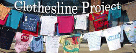
The Clothesline Project honors women survivors as well as victims of intimate
violence. Any woman who has experienced such violence, at any time in her life, is
encouraged to come forward and design a shirt. Victim's families and friends are
also invited to participate.
Editors Note: While working with a shelter in Glendale, CA during the 1990's, the
Clothesline Project was out in front of the YWCA and what an impact it had on people
reading the messages on the shirts.
Read about the History and how you can impact your neighborhood and help raise awareness with the Clothesline Project.
National Down Syndrome Awareness Month
 The National Down Syndrome Society envisions a world in which all
people with Down syndrome have the opportunity to realize their life aspirations.
NDSS is committed to being the national leader in enhancing the quality of life, and
realizing the potential of all people with Down syndrome. The mission of the
National Down Syndrome Society is to benefit people with Down syndrome and their
families through national leadership in education, research and advocacy.
The National Down Syndrome Society envisions a world in which all
people with Down syndrome have the opportunity to realize their life aspirations.
NDSS is committed to being the national leader in enhancing the quality of life, and
realizing the potential of all people with Down syndrome. The mission of the
National Down Syndrome Society is to benefit people with Down syndrome and their
families through national leadership in education, research and advocacy.
Read more about the... National Down
Syndrome Society
SAVE Today
The SAVE (Stop America's Violence Everywhere) program was launched
by the AMA Alliance in 1995 to Stop America's Violence Everywhere. As part of SAVE,
state and county Alliances provide schoolchildren, battered women and their
families, and homeless families with financial and emotional support and simple,
effective lessons in conflict resolution. Included under the SAVE umbrella are two
paths of action: SAVE-A-Shelter and SAVE Schools from Violence.
Read more about the... AMA
Alliance
World Food Day
World Food Day is a day of action against hunger.
People around the world come together to declare their commitment to create a world
free from hunger and malnutrition. Because when it comes to hunger, the only
acceptable number is zero.
Read more about the... World Food Day
National Red Ribbon Week
The Red Ribbon Campaign was started when drug traffickers in Mexico
City murdered Kiki Camarena, a DEA agent, in 1985. This began the continuing
tradition of wearing and displaying red ribbons as a symbol of intolerance towards
the use of drugs. The purpose of the Red Ribbon Campaign is to present a unified and
visible commitment toward the creation of a DRUG-FREE AMERICA.
Find out more about Red Ribbon
Week
Students Against Destructive Decisions
 SADD is a peer-to-peer education, prevention, and activism
organization dedicated to preventing destructive decisions, particularly underage
drinking, other drug use, risky and impaired driving, teen violence, and teen
suicide.
SADD is a peer-to-peer education, prevention, and activism
organization dedicated to preventing destructive decisions, particularly underage
drinking, other drug use, risky and impaired driving, teen violence, and teen
suicide.
See how you can help SADD
Fundraisers.com Features This Month's Causes
Healthy Lung Month & Clean Air Month
The American Lung Association is the oldest voluntary health organization in the United States, with a National Office and constituent and affiliate associations around the country. Founded in 1904 to fight tuberculosis, the American Lung Association today fights lung disease in all its forms, with special emphasis on asthma, tobacco control and environmental health. The American Lung Association is funded by contributions from the public, along with gifts and grants from corporations, foundations and government agencies. They Lung achieve their many successes through the work of thousands of committed volunteers and staff.
Read more about American Lung Association
 Domestic violence is a pattern of abuse with the goal of establishing or maintaining
power and control over the victim. It can happen occasionally or continuously and
often worsens over time. Domestic violence includes physical, sexual, mental, and
financial abuse. It knows no boundaries: Domestic violence can affect anyone,
regardless of income, race, ethnicity, sexual orientation, or religion.
Domestic violence is a pattern of abuse with the goal of establishing or maintaining
power and control over the victim. It can happen occasionally or continuously and
often worsens over time. Domestic violence includes physical, sexual, mental, and
financial abuse. It knows no boundaries: Domestic violence can affect anyone,
regardless of income, race, ethnicity, sexual orientation, or religion.
To help bring this issue out of the shadows, the Avon Foundation for Women launched
Speak Out Against Domestic Violence, an initiative to build awareness, educate, and
improve prevention and direct service programs.
Read more at... Avon Foundation for Women
Let's Talk Month
Established in 1980 as the Center for Population Options, Advocates for
Youth champions efforts to help young people make informed and
responsible decisions about their reproductive and sexual health. Advocates believes
it can best serve the field by boldly advocating for a more positive and realistic
approach to adolescent sexual health.
Read more about... Read
more on the Center for Population Options, Advocates for Youth
National Dental Hygiene Month

National Dental Hygiene Month (NDHM) is a month-long observance of
the importance of proper oral hygiene. The American Dental Hygienists' Association
(ADHA), the largest professional organization representing the interests of dental
hygienists, sponsors the month annually.
Read more about the... American Dental
Hygienists Association
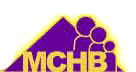
National Child Health Day
A future America in which the right to grow to one's full potential is universally
assured through attention to the comprehensive physical, psychological and social
needs of the maternal and child health population. We strive for a society where
children are wanted and born with optimal health, receive quality care and are
nurtured lovingly and sensitively as they mature into healthy, productive adults.
The Maternal and Child Health Bureau seeks a nation where there is
equal access for all to quality health care in a supportive, culturally competent,
family and community setting.
Read more about the... Maternal
and Child Health Bureau
National School Lunch Week
 School Lunch - What's Cooking is about celebrating the positive
changes that have been made in school lunch programs across the country. Schools
nationwide have been cooking up all sorts of exciting programs and plans, and by
participating in NSLW, you can showcase your accomplishments and educate your
community about the importance of healthy school lunches.
School Lunch - What's Cooking is about celebrating the positive
changes that have been made in school lunch programs across the country. Schools
nationwide have been cooking up all sorts of exciting programs and plans, and by
participating in NSLW, you can showcase your accomplishments and educate your
community about the importance of healthy school lunches.
Read more about the... National School Lunch Week
Earth Day
About Earth Day
Senator Gaylord Nelson founder of Earth Day conceived of it as a day for learning
about America's national lands and their wildlife, and how we can protect them by
doing a better job of saving energy. He saw a connection between protecting the
wilderness and saving energy, and believed if we study both, we will discover some
surprising links. Thanks to Earth Day, you can learn more about wilderness and
protecting the environment; and with that knowledge and support, the world will have
clean air and water, healthy fish and wildlife, and beautiful places to visit
forever.
Senator Gaylord Nelson believed strongly that education is the key to changing people's attitudes about the environment, and he devoted much of his energy to that challenge. READ MORE about Senator Gaylord.
Featured Website: The Nature Conservancy
The mission of the Nature Conservancy is to preserve the planet, animals and natural communities that represent the diversity of life on Earth by protecting the lands and waters they need to survive.
For more info, see... The Nature Conservancy
 Send An E-card
Send An E-card
Send a personal E-card to someone you know with an adventurous spirit or a wildlife e-card to your favorite animal lover. These free nature e-cards help you save money and paper and are perfect for any occasion. and help the National Concervancy continue it's mission.
Featured Links
Environmental issues are among the evergreen causes of charity work. Here are some of the main environmental topics that people search for on the internet every day. How much do you know about these causes?
- Recycling: Earth 911
- Endangered Species: World Wildlife Fund
- Solar Power: Energy Efficient and Renewable Energy
- Hybrid Autos: How Hybrid
Cars Work
- Pollution: EnviroLink
- Composting: VegWeb
- Wetlands: Wetlands International
- Coral Reefs: The
Coral Reef Alliance
- Pesticides: PAN Pesticides Database
- Acid Rain: Acid Rain Info
- Drinking Water: National
Drinking Water Clearinghouse
- Wind Power: American Wind Energy Association
- Water Pollution: Water
Pollution Info
- Asbestos: US Environmental Protection Agency
- Oil Spills: Oil Spills Info
- Watershed: Know Your Watershed
- Lead Poisoning: Is Your Child Affected?
Visit These Sites For More Info On Earth Day
Earth Day Network
U.S. Enviromental Protection
Agency
Keep America Beautiful
Earth Share
National Resource Defence
Council
Environmental Defense Fund
Causes That Inspire
Global Volunteer Week
 Compassion, service, empathy, understanding...combine these words with privilege,
talent, skill, energy...and you have a composite picture of the heart and soul of
many volunteers. These elements tell us much more than a head shot or group photo
ever could.
Compassion, service, empathy, understanding...combine these words with privilege,
talent, skill, energy...and you have a composite picture of the heart and soul of
many volunteers. These elements tell us much more than a head shot or group photo
ever could.
Volunteers come in every age, size, shape, and race. They're impossible to profile; crossing boundaries of geographic location, income level, educational attainment, philosophical mindset, and religious persuasion. Some sort through e-mail databases to keep donors abreast of charitable developments. Others provide their legal, financial, promotional, management and training skills on a pro-bono basis. Still more change sickbeds, lend an ear, hold anxious hands, and yes, ladle soup and prepare sandwiches in "soup kitchens" across the country.
National Volunteer Week celebrates a myriad of vastly different individuals with two things in common: a concern for others and the tenacity to turn their concern into proactive volunteerism. "Volunteers Inspire by Example," is a fitting theme for this year's National Volunteer Week, happening in April. Event organizers feel the theme, "reflects the power volunteers have to inspire not only other people to volunteer but also the people they serve."
National Volunteer Week was created by President Richard Nixon's executive order in 1974. Three decades of subsequent Presidents have continued the tradition of "celebrating and recognizing the power and spirit volunteers give back to this country."
President George W. Bush's Council on Service and Civic Participation instituted a new recognition award to coincide with National Volunteer Week in 2004. The award is intended to honor sustained commitments and significant achievements by American volunteers. In addition, such national recognition is expected to inspire others and encourage more individuals to assist neighbors with urgent needs and those in dire circumstances.
The President's Volunteer Service Award is available to kids, young adults, adults and families/groups. Recipients of the award receive: An official President's Volunteer Service Award pin; a personalized certificate of achievement; a note of congratulations from the President of the United States and a letter from the President's Council on Service and Civic Participation.
Volunteering is a year-round, twenty-four hour a day, seven days a week enterprise. Every minute of every day, someone is volunteering their time, energy, and talents to help others. One week a year, these efforts are acknowledged and attempts are made to increase volunteer commitments across the country.
Special efforts are being taken to recognize and inspire young people toward volunteer service this year. National Youth Service Days kick of the week of activities on the weekend of April 23rd. This campaign is being spearheaded by Youth Service America. It is being billed as the "largest national day of service focusing on youth volunteering."
On the opposite end of the spectrum, The National Association of Area Agencies on Aging will hold their 2004 MetLife Foundation Older Volunteers Enrich America Awards this April. A fairly recent addition to National Volunteer Week, the program celebrates its second year of support. They say, "The goal of this awards program is twofold: to acknowledge exemplary older volunteers and to encourage older Americans to contribute their knowledge, skills and time to enrich society through volunteerism."
During National Volunteer Week, every year, USA Weekend announces the winners of its "Make A Difference Day" competitive awards. These awards are sponsored by Paul Newman, a noted actor, director, and active philanthropist. The awards are bestowed on the ten most outstanding service projects. USA Today also devotes their entire Sunday issue, during National Volunteer Week, to volunteering.
According to the Points of Light Institute & Volunteer Center National Network: "During National Volunteer Week, organizations such as volunteer centers, nonprofits, businesses, government agencies, military units, hospitals, communities of faith, and schools host awards ceremonies recognizing millions of our nation's volunteers for their outstanding contributions to their communities over the past year." Additionally, "Thousands of volunteers participate in local community service projects (during National Volunteer Week)."
Last year's National Volunteer Week included an estimated 2,400 events nationwide. Almost 500,000 volunteers participated in recognition ceremonies and community service projects. Media participation is key to promoting volunteerism during this week of critical visibility. The Points of Light Institute coordinated media efforts and worked with sponsor, AT & T during 2003's various events.
They estimate, "Over 1,600 journalists at over 700 media outlets targeted 115 outlets in the AT & T market areas. The media outreach resulted in over 300 mentions in outlets across the country reaching an audience well over 15 million people." National Volunteer Week Toolkits are available to assist organizations participating in this year's events. These Toolkits contain media forms and promotional materials to assist organizations nationwide.
During this year's National Volunteer Week, take the opportunity to acknowledge individuals who generally toil in obscurity. Most volunteers don't advertise their humanitarian efforts. It's a wonderful thing that our nation observes, honors and congratulates their efforts on an annual basis
It takes a unified effort to help raise the national common denominator through compassion and service. Look around for people you know that actively sacrifice their time and talent in the service of others. Take this opportunity to thank them; and most important of all, learn from their example. Follow the lead of a volunteer and volunteer.
-- Annie Van Bebber
Read More About:
Points of Light Institute
The
President's Volunteer Service Award
Global
Youth Service Days
Hands
on Network
Fundraisers.com Features This Month's Causes
Join The Fight Against Breast Cancer
The goal of the Breast Cancer Research Foundation is to achieve prevention and a cure for breast cancer in our lifetime by providing critical funding for innovative clinical and genetic research at leading medical centers worldwide, and increasing public awareness about good breast health. A minimum of 85 cents of every dollar goes to research and awareness programs.
Susan G. Komen for the Cure
is the global leader of the breast cancer movement, having invested more than $1 billion since inception in 1982. As the world's largest grassroots network of breast cancer survivors and activists, they are working
together to save lives, empower people, ensure quality care for all and energize science to find the cures.
According to the National Cancer Institute, Breast Cancer is the most common non-skin cancer, and the second leading cause of cancer related death in women. Although the breast cancer diagnosis rate has increased, there has been a steady drop in the overall breast cancer death rates since the early 1990s. Currently, $570 million dollars a year is spent on breast cancer research.
Domestic Violence Awareness Month
What Mariska Hargitay Said She Discovered
One in three women report being physically or sexually abused by a husband or boyfriend at some point in their lives.
Every two minutes in the United States, someone is sexually assaulted.
More than five children die every day in this country as a result of child abuse and neglect, and up to 15 million children witness domestic violence in their homes each year.
But what really opened her eyes and subsequently, her heart, was the fan mail she received. The letters didn't say, "I love your show. Can you send me an autographed picture?" They said, "I was raped when I was fifteen. I'm forty now and I've never told anyone." Survivors were disclosing their stories to her, many for the first time.
The fact that these individuals were revealing something so personal to someone they knew only as a character on television demonstrated to Mariska, and to all of us, how desperate they were to be heard, believed, supported and healed.
Now you can help too! Get Involved
Inspired by her deep connection and love for Hawaii, where she first experienced her own heart awakening, Mariska founded Joyful Heart in Kona in 2004, with the intention of helping sexual assault survivors heal and reclaim a sense of joy in their lives.
Now you can help too! Get Involved
What is NO MORE?
NO MORE is a new unifying symbol designed to galvanize greater awareness and action to end domestic violence and sexual assault. Supported by major organizations working to address these urgent issues, NO MORE is gaining support with Americans nationwide, sparking new conversations about these problems and moving this cause higher on the public agenda.
Find Out HERE
"Bearing Witness to Violence Against Women for over two decades"
The Clothesline Project honors women survivors as well as victims of intimate violence. Any woman who has experienced such violence, at any time in her life, is encouraged to come forward and design a shirt. Victim's families and friends are also invited to participate.
Editors Note: While working with a shelter in Glendale, CA during the 1990's, the Clothesline Project was out in front of the YWCA and what an impact it had on people reading the messages on the shirts.
Read about the History and how you can impact your neighborhood and help raise awareness with the Clothesline Project.
National Down Syndrome Awareness Month
 The National Down Syndrome Society envisions a world in which all people with Down syndrome have the opportunity to realize their life aspirations. NDSS is committed to being the national leader in enhancing the quality of life, and realizing the potential of all people with Down syndrome. The mission of the National Down Syndrome Society is to benefit people with Down syndrome and their families through national leadership in education, research and advocacy.
The National Down Syndrome Society envisions a world in which all people with Down syndrome have the opportunity to realize their life aspirations. NDSS is committed to being the national leader in enhancing the quality of life, and realizing the potential of all people with Down syndrome. The mission of the National Down Syndrome Society is to benefit people with Down syndrome and their families through national leadership in education, research and advocacy.
Read more about the... National Down Syndrome Society
SAVE Today
The SAVE (Stop America's Violence Everywhere) program was launched by the AMA Alliance in 1995 to Stop America's Violence Everywhere. As part of SAVE, state and county Alliances provide schoolchildren, battered women and their families, and homeless families with financial and emotional support and simple, effective lessons in conflict resolution. Included under the SAVE umbrella are two paths of action: SAVE-A-Shelter and SAVE Schools from Violence.
Read more about the... AMA Alliance
World Food Day
World Food Day is a day of action against hunger.
People around the world come together to declare their commitment to create a world free from hunger and malnutrition. Because when it comes to hunger, the only acceptable number is zero.
Read more about the... World Food Day
National Red Ribbon Week
The Red Ribbon Campaign was started when drug traffickers in Mexico City murdered Kiki Camarena, a DEA agent, in 1985. This began the continuing tradition of wearing and displaying red ribbons as a symbol of intolerance towards the use of drugs. The purpose of the Red Ribbon Campaign is to present a unified and visible commitment toward the creation of a DRUG-FREE AMERICA.
Find out more about Red Ribbon Week
Students Against Destructive Decisions
SADD is a peer-to-peer education, prevention, and activism organization dedicated to preventing destructive decisions, particularly underage drinking, other drug use, risky and impaired driving, teen violence, and teen suicide.
See how you can help SADD
Fundraisers.com Features This Month's Causes
Healthy Lung Month & Clean Air Month
The American Lung Association is the oldest voluntary health organization in the United States, with a National Office and constituent and affiliate associations around the country. Founded in 1904 to fight tuberculosis, the American Lung Association today fights lung disease in all its forms, with special emphasis on asthma, tobacco control and environmental health. The American Lung Association is funded by contributions from the public, along with gifts and grants from corporations, foundations and government agencies. They Lung achieve their many successes through the work of thousands of committed volunteers and staff.
Read more about American Lung Association
Domestic violence is a pattern of abuse with the goal of establishing or maintaining power and control over the victim. It can happen occasionally or continuously and often worsens over time. Domestic violence includes physical, sexual, mental, and financial abuse. It knows no boundaries: Domestic violence can affect anyone, regardless of income, race, ethnicity, sexual orientation, or religion.
To help bring this issue out of the shadows, the Avon Foundation for Women launched Speak Out Against Domestic Violence, an initiative to build awareness, educate, and improve prevention and direct service programs.
Read more at... Avon Foundation for Women
Let's Talk Month
Established in 1980 as the Center for Population Options, Advocates for Youth champions efforts to help young people make informed and responsible decisions about their reproductive and sexual health. Advocates believes it can best serve the field by boldly advocating for a more positive and realistic approach to adolescent sexual health.
Read more about... Read more on the Center for Population Options, Advocates for Youth
National Dental Hygiene Month
National Dental Hygiene Month (NDHM) is a month-long observance of the importance of proper oral hygiene. The American Dental Hygienists' Association (ADHA), the largest professional organization representing the interests of dental hygienists, sponsors the month annually.
Read more about the... American Dental Hygienists Association
National Child Health Day
A future America in which the right to grow to one's full potential is universally assured through attention to the comprehensive physical, psychological and social needs of the maternal and child health population. We strive for a society where children are wanted and born with optimal health, receive quality care and are nurtured lovingly and sensitively as they mature into healthy, productive adults. The Maternal and Child Health Bureau seeks a nation where there is equal access for all to quality health care in a supportive, culturally competent, family and community setting.
Read more about the... Maternal and Child Health Bureau
National School Lunch Week
School Lunch - What's Cooking is about celebrating the positive changes that have been made in school lunch programs across the country. Schools nationwide have been cooking up all sorts of exciting programs and plans, and by participating in NSLW, you can showcase your accomplishments and educate your community about the importance of healthy school lunches.
Read more about the... National School Lunch Week
Earth Day
About Earth Day
Senator Gaylord Nelson founder of Earth Day conceived of it as a day for learning about America's national lands and their wildlife, and how we can protect them by doing a better job of saving energy. He saw a connection between protecting the wilderness and saving energy, and believed if we study both, we will discover some surprising links. Thanks to Earth Day, you can learn more about wilderness and protecting the environment; and with that knowledge and support, the world will have clean air and water, healthy fish and wildlife, and beautiful places to visit forever.
Senator Gaylord Nelson believed strongly that education is the key to changing people's attitudes about the environment, and he devoted much of his energy to that challenge. READ MORE about Senator Gaylord.
Featured Website: The Nature Conservancy
The mission of the Nature Conservancy is to preserve the planet, animals and natural communities that represent the diversity of life on Earth by protecting the lands and waters they need to survive.
For more info, see... The Nature Conservancy
Send An E-card
Send a personal E-card to someone you know with an adventurous spirit or a wildlife e-card to your favorite animal lover. These free nature e-cards help you save money and paper and are perfect for any occasion. and help the National Concervancy continue it's mission.
Featured Links
Environmental issues are among the evergreen causes of charity work. Here are some of the main environmental topics that people search for on the internet every day. How much do you know about these causes?
- Recycling: Earth 911
- Endangered Species: World Wildlife Fund
- Solar Power: Energy Efficient and Renewable Energy
- Hybrid Autos: How Hybrid Cars Work
- Pollution: EnviroLink
- Composting: VegWeb
- Wetlands: Wetlands International
- Coral Reefs: The Coral Reef Alliance
- Pesticides: PAN Pesticides Database
- Acid Rain: Acid Rain Info
- Drinking Water: National Drinking Water Clearinghouse
- Wind Power: American Wind Energy Association
- Water Pollution: Water Pollution Info
- Asbestos: US Environmental Protection Agency
- Oil Spills: Oil Spills Info
- Watershed: Know Your Watershed
- Lead Poisoning: Is Your Child Affected?
Visit These Sites For More Info On Earth Day
Earth Day Network
U.S. Enviromental Protection Agency
Keep America Beautiful
Earth Share
National Resource Defence Council
Environmental Defense Fund
Causes That Inspire
Global Volunteer Week
Compassion, service, empathy, understanding...combine these words with privilege, talent, skill, energy...and you have a composite picture of the heart and soul of many volunteers. These elements tell us much more than a head shot or group photo ever could.
Volunteers come in every age, size, shape, and race. They're impossible to profile; crossing boundaries of geographic location, income level, educational attainment, philosophical mindset, and religious persuasion. Some sort through e-mail databases to keep donors abreast of charitable developments. Others provide their legal, financial, promotional, management and training skills on a pro-bono basis. Still more change sickbeds, lend an ear, hold anxious hands, and yes, ladle soup and prepare sandwiches in "soup kitchens" across the country.
National Volunteer Week celebrates a myriad of vastly different individuals with two things in common: a concern for others and the tenacity to turn their concern into proactive volunteerism. "Volunteers Inspire by Example," is a fitting theme for this year's National Volunteer Week, happening in April. Event organizers feel the theme, "reflects the power volunteers have to inspire not only other people to volunteer but also the people they serve."
National Volunteer Week was created by President Richard Nixon's executive order in 1974. Three decades of subsequent Presidents have continued the tradition of "celebrating and recognizing the power and spirit volunteers give back to this country."
President George W. Bush's Council on Service and Civic Participation instituted a new recognition award to coincide with National Volunteer Week in 2004. The award is intended to honor sustained commitments and significant achievements by American volunteers. In addition, such national recognition is expected to inspire others and encourage more individuals to assist neighbors with urgent needs and those in dire circumstances.
The President's Volunteer Service Award is available to kids, young adults, adults and families/groups. Recipients of the award receive: An official President's Volunteer Service Award pin; a personalized certificate of achievement; a note of congratulations from the President of the United States and a letter from the President's Council on Service and Civic Participation.
Volunteering is a year-round, twenty-four hour a day, seven days a week enterprise. Every minute of every day, someone is volunteering their time, energy, and talents to help others. One week a year, these efforts are acknowledged and attempts are made to increase volunteer commitments across the country.
Special efforts are being taken to recognize and inspire young people toward volunteer service this year. National Youth Service Days kick of the week of activities on the weekend of April 23rd. This campaign is being spearheaded by Youth Service America. It is being billed as the "largest national day of service focusing on youth volunteering."
On the opposite end of the spectrum, The National Association of Area Agencies on Aging will hold their 2004 MetLife Foundation Older Volunteers Enrich America Awards this April. A fairly recent addition to National Volunteer Week, the program celebrates its second year of support. They say, "The goal of this awards program is twofold: to acknowledge exemplary older volunteers and to encourage older Americans to contribute their knowledge, skills and time to enrich society through volunteerism."
During National Volunteer Week, every year, USA Weekend announces the winners of its "Make A Difference Day" competitive awards. These awards are sponsored by Paul Newman, a noted actor, director, and active philanthropist. The awards are bestowed on the ten most outstanding service projects. USA Today also devotes their entire Sunday issue, during National Volunteer Week, to volunteering.
According to the Points of Light Institute & Volunteer Center National Network: "During National Volunteer Week, organizations such as volunteer centers, nonprofits, businesses, government agencies, military units, hospitals, communities of faith, and schools host awards ceremonies recognizing millions of our nation's volunteers for their outstanding contributions to their communities over the past year." Additionally, "Thousands of volunteers participate in local community service projects (during National Volunteer Week)."
Last year's National Volunteer Week included an estimated 2,400 events nationwide. Almost 500,000 volunteers participated in recognition ceremonies and community service projects. Media participation is key to promoting volunteerism during this week of critical visibility. The Points of Light Institute coordinated media efforts and worked with sponsor, AT & T during 2003's various events.
They estimate, "Over 1,600 journalists at over 700 media outlets targeted 115 outlets in the AT & T market areas. The media outreach resulted in over 300 mentions in outlets across the country reaching an audience well over 15 million people." National Volunteer Week Toolkits are available to assist organizations participating in this year's events. These Toolkits contain media forms and promotional materials to assist organizations nationwide.
During this year's National Volunteer Week, take the opportunity to acknowledge individuals who generally toil in obscurity. Most volunteers don't advertise their humanitarian efforts. It's a wonderful thing that our nation observes, honors and congratulates their efforts on an annual basis
It takes a unified effort to help raise the national common denominator through compassion and service. Look around for people you know that actively sacrifice their time and talent in the service of others. Take this opportunity to thank them; and most important of all, learn from their example. Follow the lead of a volunteer and volunteer.
-- Annie Van Bebber
Read More About:
Points of Light Institute
The
President's Volunteer Service Award
Global
Youth Service Days
Hands
on Network
Do you know of a worthy cause we should feature, send link and short description
to:
annie@fundraisers.com
Click on the month for detailed information on the causes.
International Massage Week
Eye Injury Prevention Month
Light the Night for Sight
International Group B Strep Awareness Month
America's Night Out Against Crime
Spinal Muscular Atrophy Month
Psoriasis Awareness Month
Amblyopia Awareness Month
Suicide Awareness Week
STOP a Suicide Today
Alcohol Awareness Month
Gynecologic Cancer Awareness Month
National Cholesterol Education Month
National Menopause Awareness Month
National Child Passenger Safety Awareness Week